NLP • Retrieval Augmented Generation
- Overview
- Motivation
- Lexical Retrieval
- Semantic Retrieval
- Hybrid Retrieval (Lexical + Semantic)
- The Retrieval Augmented Generation (RAG) Pipeline
- Benefits of RAG
- Ensemble of RAG
- Choosing a Vector DB using a Feature Matrix
- Building a RAG pipeline
- Ingestion
- Retrieval
- Re-ranking
- Response Generation / Synthesis
- RAG in Multi-Turn Chatbots: Embedding Queries for Retrieval
- Component-Wise Evaluation
- Multimodal Input Handling
- Multimodal RAG
- Agentic Retrieval-Augmented Generation
- How Agentic RAG Works
- Agentic Decision-Making in Retrieval
- Agentic RAG Architectures: Single-Agent vs. Multi-Agent Systems
- Beyond Retrieval: Expanding Agentic RAG’s Capabilities
- Agentic RAG vs. Vanilla RAG: Key Differences
- Implementing Agentic RAG: Key Approaches
- Enterprise-driven Adoption
- Benefits
- Limitations
- Code
- Disadvantages of Agentic RAG
- Summary
- RAG vs. Long Context Windows
- Improving RAG Systems
- RAG 2.0
- Selected Papers
- Retrieval-Augmented Generation for Knowledge-Intensive NLP Tasks
- Active Retrieval Augmented Generation
- MuRAG: Multimodal Retrieval-Augmented Generator
- Hypothetical Document Embeddings (HyDE)
- RAGAS: Automated Evaluation of Retrieval Augmented Generation
- Fine-Tuning or Retrieval? Comparing Knowledge Injection in LLMs
- Dense X Retrieval: What Retrieval Granularity Should We Use?
- ARES: An Automated Evaluation Framework for Retrieval-Augmented Generation Systems
- Seven Failure Points When Engineering a Retrieval Augmented Generation System
- RAPTOR: Recursive Abstractive Processing for Tree-Organized Retrieval
- The Power of Noise: Redefining Retrieval for RAG Systems
- MultiHop-RAG: Benchmarking Retrieval-Augmented Generation for Multi-Hop Queries
- RAG vs Fine-tuning: Pipelines, Tradeoffs, and a Case Study on Agriculture
- RAFT: Adapting Language Model to Domain Specific RAG
- Corrective Retrieval Augmented Generation
- Fine Tuning vs. Retrieval Augmented Generation for Less Popular Knowledge
- HGOT: Hierarchical Graph of Thoughts for Retrieval-Augmented In-Context Learning in Factuality Evaluation
- How faithful are RAG models? Quantifying the tug-of-war between RAG and LLMs’ internal prior
- Adaptive-RAG: Learning to Adapt Retrieval-Augmented Large Language Models through Question Complexity
- RichRAG: Crafting Rich Responses for Multi-faceted Queries in Retrieval-Augmented Generation
- HiQA: A Hierarchical Contextual Augmentation RAG for Massive Documents QA
- References
- Citation
Overview
- Retrieval-Augmented Generation (RAG) is an advanced technique designed to enhance the output of Language Models (LMs) by incorporating external knowledge sources.
- RAG is achieved by retrieving relevant information from a large corpus of documents and utilizing that information to guide and inform the generative process of the model. The subsequent sections provide a detailed examination of this methodology.
Motivation
- In many real-world scenarios, organizations maintain extensive collections of proprietary documents, such as technical manuals, from which precise information must be extracted. This challenge is often analogous to locating a needle in a haystack, given the sheer volume and complexity of the content.
- While recent advancements, such as OpenAI’s introduction of GPT-4 Turbo, offer improved capabilities for processing lengthy documents, they are not without limitations. Notably, these models exhibit a tendency known as the “Lost in the Middle” phenomenon, wherein information positioned near the center of the context window is more likely to be overlooked or forgotten. This issue is akin to reading a comprehensive text such as the Bible, yet struggling to recall specific content from its middle chapters.
- To address this shortcoming, the RAG approach has been introduced. This method involves segmenting documents into discrete units—typically paragraphs—and creating an index for each. Upon receiving a query, the system efficiently identifies and retrieves the most relevant segments, which are then supplied to the language model. By narrowing the input to only the most pertinent information, this strategy mitigates cognitive overload within the model and substantially improves the relevance and accuracy of its responses.
Lexical Retrieval
-
Lexical retrieval is the traditional approach to information retrieval based on exact word matches and term frequency. Two commonly used methods in this category are TF-IDF and BM25.
- TF-IDF (Term Frequency-Inverse Document Frequency):
- TF-IDF evaluates the importance of a word in a document relative to a corpus. It increases proportionally with the number of times a word appears in the document but is offset by how frequently the word appears across all documents.
- While TF-IDF is simple and effective for many scenarios, it does not take into account the saturation of term frequency and lacks the ability to differentiate between rare and common words beyond the basic IDF scaling.
- BM25 (Best Matching 25):
- BM25 is a more refined version of TF-IDF. It introduces term frequency saturation and document length normalization, improving relevance scoring.
- One of the key advantages of BM25 over TF-IDF is its ability to handle multiple occurrences of a term in a more nuanced way. It prevents overly frequent terms from dominating the score, making retrieval results more balanced.
- BM25 also scales better with document length, giving fair chances to both short and long documents.
- TF-IDF (Term Frequency-Inverse Document Frequency):
- Advantages of Lexical Retrieval:
- Fast and computationally efficient.
- Easy to interpret and implement.
- Works well when exact keyword matching is important.
- Limitations:
- Cannot handle synonyms or paraphrased queries effectively.
- Limited ability to capture semantic meaning.
Semantic Retrieval
-
Semantic retrieval, previously referred to as neural retrieval, is a more recent approach that relies on machine learning models to understand the meaning behind queries and documents.
-
These systems use neural networks to embed both queries and documents into a shared vector space, where semantic similarity can be calculated using metrics like cosine similarity.
- How it works:
- Vector Encoding:
- Both queries and documents are transformed into dense vectors using pre-trained or fine-tuned encoders.
- These encoders are typically trained on large datasets, enabling them to capture semantic nuances beyond surface-level keyword overlap.
- Semantic Matching:
- Vectors are compared to identify the most semantically relevant documents, even if they don’t share explicit terms with the query.
- Vector Encoding:
- Advantages of Semantic Retrieval:
- Handles paraphrasing, synonyms, and conceptual similarity effectively.
- Supports more natural and conversational queries.
- Multilingual capabilities are often built-in.
- Challenges and Considerations:
- Requires significant computational resources.
- Retrieval quality is sensitive to training data and may reflect biases.
- Updating document embeddings for dynamic content can be complex.
Hybrid Retrieval (Lexical + Semantic)
-
A hybrid retrieval system combines the strengths of lexical and semantic methods to deliver more accurate and robust results.
-
One popular technique for hybrid retrieval is Reciprocal Rank Fusion (RRF). RRF merges the rankings from different retrieval models (e.g., BM25 and a neural retriever) by assigning higher scores to documents that consistently rank well across systems.
- How RRF works:
- Each document receives a score based on its position in the ranked lists from multiple retrieval methods.
- The scores are combined using the following reciprocal formula:
where:
- \(d\) is the document,
- \(\text{rank}_i(d)\) is the rank position of document \(d\) in the \(i^{\text{th}}\) ranked list,
- \(k\) is a constant (typically set to 60),
- \(n\) is the number of retrieval systems.
- Example:
-
Suppose two retrieval systems return the following top-5 rankings for a given query:
- BM25: [DocA, DocB, DocC, DocD, DocE]
-
Neural Retriever: [DocF, DocC, DocA, DocG, DocB]
-
RRF scores are calculated as follows:
-
For DocA (rank 1 in BM25, rank 3 in Neural Retriever):
\[\text{RRF Score}(\text{DocA}) = \frac{1}{60 + 1} + \frac{1}{60 + 3}\] -
For DocC (rank 3 in BM25, rank 2 in Neural Retriever):
\[\text{RRF Score}(\text{DocC}) = \frac{1}{60 + 3} + \frac{1}{60 + 2}\] -
For DocB (rank 2 in BM25, rank 5 in Neural Retriever):
\[\text{RRF Score}(\text{DocB}) = \frac{1}{60 + 2} + \frac{1}{60 + 5}\] -
After computing scores for all documents, the final RRF ranking is determined by sorting them in descending order of their cumulative scores.
-
-
- Benefits of Hybrid Retrieval:
- Increases recall by retrieving relevant documents that either lexical or semantic methods might miss individually.
- Balances precision and coverage.
- Makes the retrieval system more resilient to query variations and noise.
The Retrieval Augmented Generation (RAG) Pipeline
- With RAG, the LLM is able to leverage knowledge and information that is not necessarily in its weights by providing it access to external knowledge sources such as databases.
- It leverages a retriever to find relevant contexts to condition the LLM, in this way, RAG is able to augment the knowledge-base of an LLM with relevant documents.
- The retriever here could be any of the following depending on the need for semantic retrieval or not:
- Vector database: Typically, queries are embedded using models like BERT for generating dense vector embeddings. Alternatively, traditional methods like TF-IDF can be used for sparse embeddings. The search is then conducted based on term frequency or semantic similarity.
- Graph database: Constructs a knowledge base from extracted entity relationships within the text. This approach is precise but may require exact query matching, which could be restrictive in some applications.
- Regular SQL database: Offers structured data storage and retrieval but might lack the semantic flexibility of vector databases.
- The image below from Damien Benveniste, PhD talks a bit about the difference between using Graph vs Vector database for RAG.
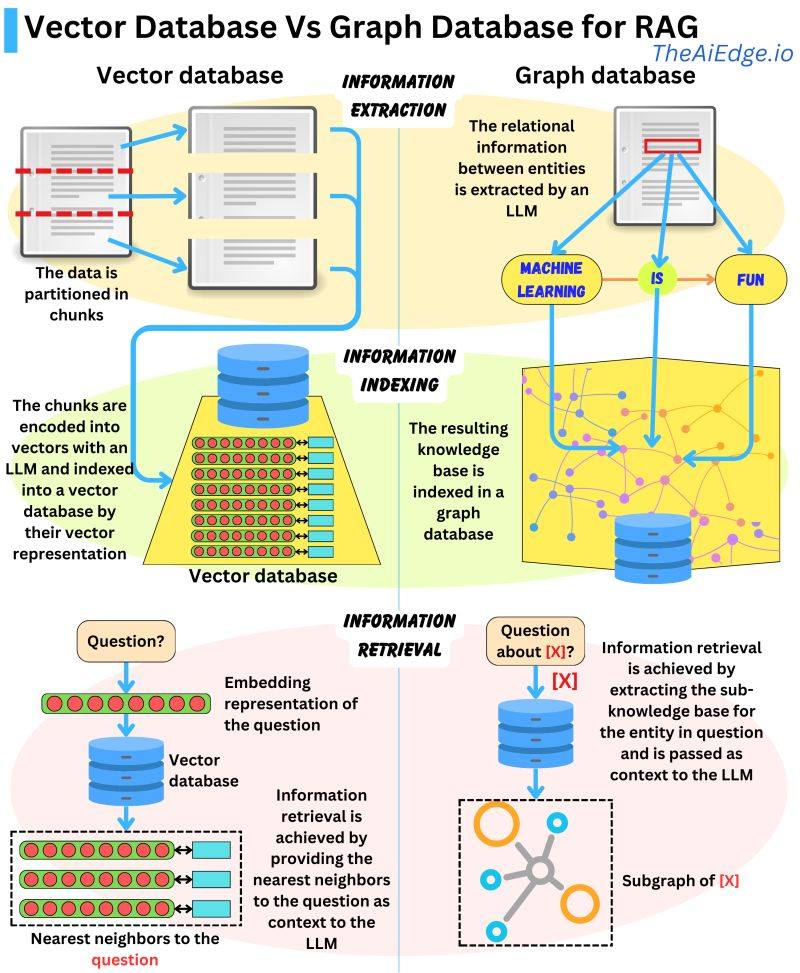
- In his post linked above, Damien states that Graph Databases are favored for Retrieval Augmented Generation (RAG) when compared to Vector Databases. While Vector Databases partition and index data using LLM-encoded vectors, allowing for semantically similar vector retrieval, they may fetch irrelevant data.
- Graph Databases, on the other hand, build a knowledge base from extracted entity relationships in the text, making retrievals concise. However, it requires exact query matching which can be limiting.
-
A potential solution could be to combine the strengths of both databases: indexing parsed entity relationships with vector representations in a graph database for more flexible information retrieval. It remains to be seen if such a hybrid model exists.
- After retrieving, you may want to look into filtering the candidates further by adding ranking and/or fine ranking layers that allow you to filter down candidates that do not match your business rules, are not personalized for the user, current context, or response limit.
- Let’s succinctly summarize the process of RAG and then delve into its pros and cons:
- Vector Database Creation: RAG starts by converting an internal dataset into vectors and storing them in a vector database (or a database of your choosing).
- User Input: A user provides a query in natural language, seeking an answer or completion.
- Information Retrieval: The retrieval mechanism scans the vector database to identify segments that are semantically similar to the user’s query (which is also embedded). These segments are then given to the LLM to enrich its context for generating responses.
- Combining Data: The chosen data segments from the database are combined with the user’s initial query, creating an expanded prompt.
- Generating Text: The enlarged prompt, filled with added context, is then given to the LLM, which crafts the final, context-aware response.
- The image below (source) displays the high-level working of RAG. 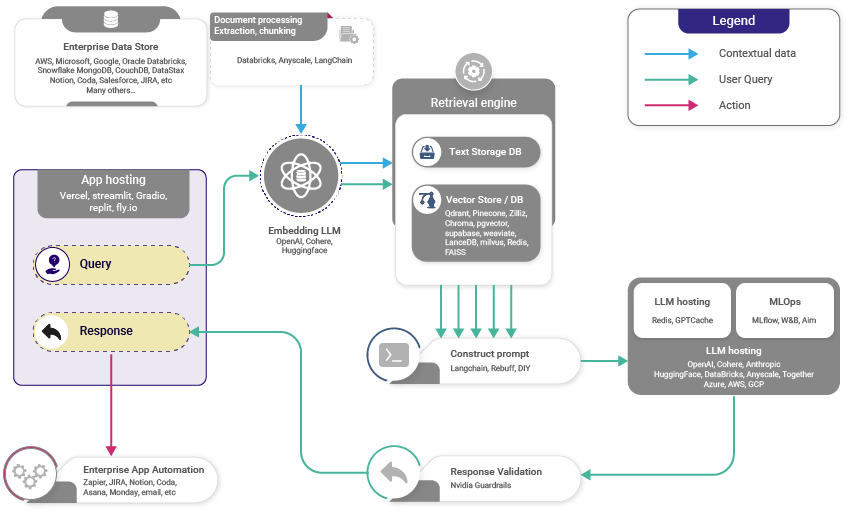
Benefits of RAG
- So why should you use RAG for your application?
- With RAG, the LLM is able to leverage knowledge and information that is not necessarily in its weights by providing it access to external knowledge bases.
- RAG doesn’t require model retraining, saving time and computational resources.
- It’s effective even with a limited amount of labeled data.
- However, it does have its drawbacks, namely RAG’s performance depends on the comprehensiveness and correctness of the retriever’s knowledge base.
- RAG is best suited for scenarios with abundant unlabeled data but scarce labeled data and is ideal for applications like virtual assistants needing real-time access to specific information like product manuals.
- Scenarios with abundant unlabeled data but scarce labeled data: RAG is useful in situations where there is a lot of data available, but most of it is not categorized or labeled in a way that’s useful for training models. As an example, the internet has vast amounts of text, but most of it isn’t organized in a way that directly answers specific questions.
- Furthermore, RAG is ideal for applications like virtual assistants: Virtual assistants, like Siri or Alexa, need to pull information from a wide range of sources to answer questions in real-time. They need to understand the question, retrieve relevant information, and then generate a coherent and accurate response.
- Needing real-time access to specific information like product manuals: This is an example of a situation where RAG models are particularly useful. Imagine you ask a virtual assistant a specific question about a product, like “How do I reset my XYZ brand thermostat?” The RAG model would first retrieve relevant information from product manuals or other resources, and then use that information to generate a clear, concise answer.
- In summary, RAG models are well-suited for applications where there’s a lot of information available, but it’s not neatly organized or labeled.
- Below, let’s take a look at the publication that introduced RAG and how the original paper implemented the framework.
RAG vs. Fine-tuning
- The table below (source) compares RAG vs. fine-tuning.

- To summarize the above table:
- RAG offers Large Language Models (LLMs) access to factual, access-controlled, timely information. This integration enables LLMs to fetch precise and verified facts directly from relevant databases and knowledge repositories in real-time. While fine-tuning can address some of these aspects by adapting the model to specific data, RAG excels at providing up-to-date and specific information without the substantial costs associated with fine-tuning. Moreover, RAG enhances the model’s ability to remain current and relevant by dynamically accessing and retrieving the latest data, thus ensuring the responses are accurate and contextually appropriate. Additionally, RAG’s approach to leveraging external sources can be more flexible and scalable, allowing for easy updates and adjustments without the need for extensive retraining.
- Fine-tuning adapts the style, tone, and vocabulary of LLMs so that your linguistic “paint brush” matches the desired domain and style. RAG does not provide this level of customization in terms of linguistic style and vocabulary.
- Focus on RAG first. A successful LLM application typically involves connecting specialized data to the LLM workflow. Once you have a functional application, you can add fine-tuning to enhance the style and vocabulary of the system.
Ensemble of RAG
- Leveraging an ensemble of RAG systems offers a substantial upgrade to the model’s ability to produce rich and contextually accurate text. Here’s an enhanced breakdown of how this procedure could work:
- Knowledge sources: RAG models retrieve information from external knowledge stores to augment their knowledge in a particular domain. These can include passages, tables, images, etc. from domains like Wikipedia, books, news, databases.
- Combining sources: At inference time, multiple retrievers can pull relevant content from different corpora. For example, one retriever searches Wikipedia, another searches news sources. Their results are concatenated into a pooled set of candidates.
- Ranking: The model ranks the pooled candidates by their relevance to the context.
- Selection: Highly ranked candidates are selected to condition the language model for generation.
- Ensembling: Separate RAG models specialized on different corpora can be ensembled. Their outputs are merged, ranked, and voted on.
- Multiple knowledge sources can augment RAG models through pooling and ensembles. Careful ranking and selection helps integrate these diverse sources for improved generation.
- One thing to keep in mind when using multiple retrievers is to rank the different outputs from each retriever before merging them to form a response. This can be done in a variety of ways, using LTR algorithms, multi-armed bandit framework, multi-objective optimization, or according to specific business use cases.
Choosing a Vector DB using a Feature Matrix
- To compare the plethora of Vector DB offerings, a feature matrix that highlights the differences between Vector DBs and which to use in which scenario is essential.
- Vector DB Comparison by VectorHub offers a great comparison spanning 37 vendors and 29 features (as of this writing).
- As a secondary resource, the following table (source) shows a comparison of some of the prevalent Vector DB offers along various feature dimensions:
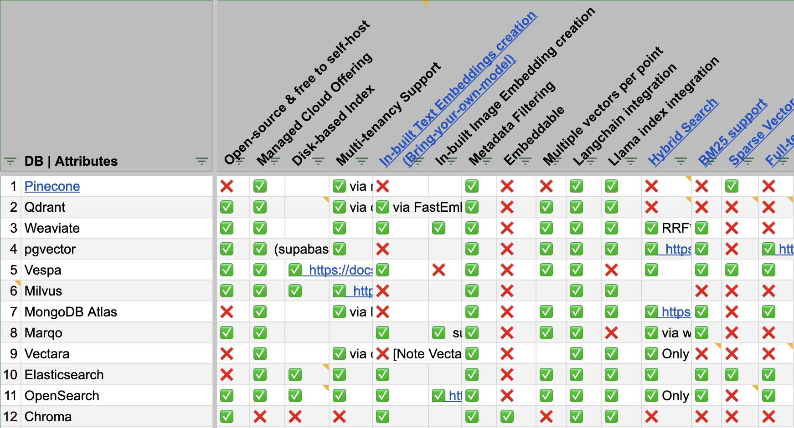
- Access the full spreadsheet here.
Building a RAG pipeline
- The image below (source), gives a visual overview of the three different steps of RAG: Ingestion, Retrieval, and Synthesis/Response Generation.
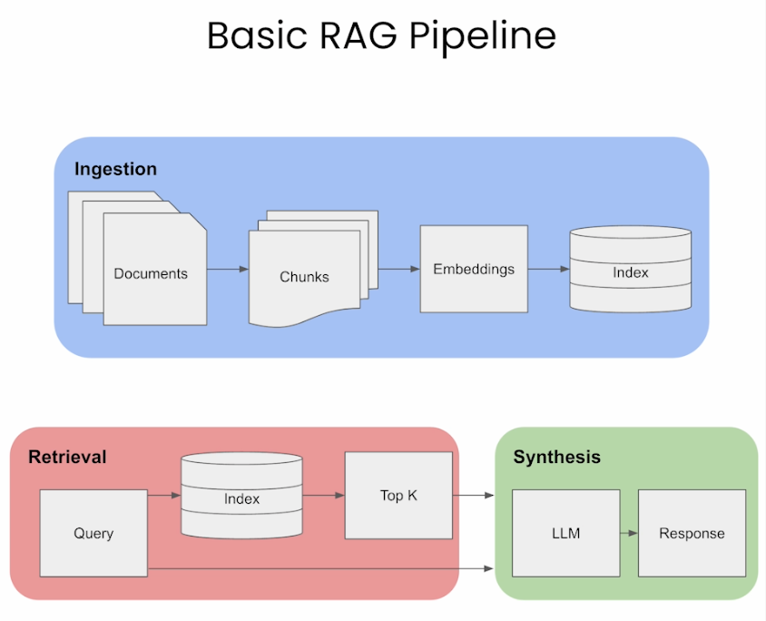
- In the sections below, we will go over these key areas.
Ingestion
Chunking
- Chunking is the process of dividing the prompts and/or the documents to be retrieved, into smaller, manageable segments or chunks. These chunks can be defined either by a fixed size, such as a specific number of characters, sentences, or paragraphs. The choice of chunking strategy plays a critical role in determining both the performance and efficiency of your RAG system.
- Each chunk is encoded into an embedding vector for retrieval. Smaller, more precise chunks lead to a finer match between the user’s query and the content, enhancing the accuracy and relevance of the information retrieved.
- Larger chunks might include irrelevant information, introducing noise and potentially reducing the retrieval accuracy. By controlling the chunk size, RAG can maintain a balance between comprehensiveness and precision.
- So the next natural question that comes up is, how do you choose the right chunk size for your use case? The choice of chunk size in RAG is crucial. It needs to be small enough to ensure relevance and reduce noise but large enough to maintain the context’s integrity. Let’s look at a few methods below referred from Pinecone:
- Fixed-size Chunking: Simply decide the number of tokens in our chunk along with whether there should be overlap between them or not. Overlap between chunks guarantees there to be minimal semantic context loss between chunks. This option is computationally cheap and simple to implement.
text = "..." # your text from langchain.text_splitter import CharacterTextSplitter text_splitter = CharacterTextSplitter( separator = "\n\n", chunk_size = 256, chunk_overlap = 20 ) docs = text_splitter.create_documents([text]) - Context-aware Chunking: Content-aware chunking leverages the intrinsic structure of the text to create chunks that are more meaningful and contextually relevant. Here are several approaches to achieving this:
- Sentence Splitting: This method aligns with models optimized for embedding sentence-level content. Different tools and techniques can be used for sentence splitting:
- Naive Splitting: A basic method where sentences are split using periods and new lines. Example:
text = "..." # Your text docs = text.split(".")- This method is quick but may overlook complex sentence structures.
- NLTK (Natural Language Toolkit): A comprehensive Python library for language processing. NLTK includes a sentence tokenizer that effectively splits text into sentences. Example:
text = "..." # Your text from langchain.text_splitter import NLTKTextSplitter text_splitter = NLTKTextSplitter() docs = text_splitter.split_text(text) - spaCy: An advanced Python library for NLP tasks, spaCy offers efficient sentence segmentation. Example:
text = "..." # Your text from langchain.text_splitter import SpacyTextSplitter text_splitter = SpacyTextSplitter() docs = text_splitter.split_text(text)
- Naive Splitting: A basic method where sentences are split using periods and new lines. Example:
- Recursive Chunking: Recursive chunking is an iterative method that splits text hierarchically using various separators. It adapts to create chunks of similar size or structure by recursively applying different criteria. Example using LangChain:
text = "..." # Your text from langchain.text_splitter import RecursiveCharacterTextSplitter text_splitter = RecursiveCharacterTextSplitter( chunk_size = 256, chunk_overlap = 20 ) docs = text_splitter.create_documents([text]) - Structure-based Chunking: For formatted content like Markdown or LaTeX, specialized chunking can be applied to maintain the original structure:
- Markdown Chunking: Recognizes Markdown syntax and divides content based on structure. Example:
from langchain.text_splitter import MarkdownTextSplitter markdown_text = "..." markdown_splitter = MarkdownTextSplitter(chunk_size=100, chunk_overlap=0) docs = markdown_splitter.create_documents([markdown_text]) - LaTeX Chunking: Parses LaTeX commands and environments to chunk content while preserving its logical organization.
- Markdown Chunking: Recognizes Markdown syntax and divides content based on structure. Example:
- Semantic Chunking: Segment text based on semantic similarity. This means that sentences with the strongest semantic connections are grouped together, while sentences that move to another topic or theme are separated into distinct chunks. Notebook.
- Semantic chunking can be summarized in four steps:
- Split the text into sentences, paragraphs, or other rule-based units.
- Vectorize a window of sentences or other units.
- Calculate the cosine distance between the embedded windows.
- Merge sentences or units until the cosine similarity value reaches a specific threshold.
- The following figure (source) visually summarizes the overall process:
- Semantic chunking can be summarized in four steps:
- Sentence Splitting: This method aligns with models optimized for embedding sentence-level content. Different tools and techniques can be used for sentence splitting:
- Fixed-size Chunking: Simply decide the number of tokens in our chunk along with whether there should be overlap between them or not. Overlap between chunks guarantees there to be minimal semantic context loss between chunks. This option is computationally cheap and simple to implement.
- “As a rule of thumb, if the chunk of text makes sense without the surrounding context to a human, it will make sense to the language model as well. Therefore, finding the optimal chunk size for the documents in the corpus is crucial to ensuring that the search results are accurate and relevant.” (source)
Figuring out the ideal chunk size
- Choosing the right chunk size is foundational to building an effective RAG system. It directly influences retrieval quality, model efficiency, and how well the system captures relevant context for downstream tasks. Poor chunking can lead to fragmented information or excessive context loss, undermining overall performance.
-
Building a RAG system involves determining the ideal chunk sizes for the documents that the retriever component will process. The ideal chunk size depends on several factors:
-
Data Characteristics: The nature of your data is crucial. For text documents, consider the average length of paragraphs or sections. If the documents are well-structured with distinct sections, these natural divisions might serve as a good basis for chunking.
-
Retriever Constraints: The retriever model you choose (like BM25, TF-IDF, or a neural retriever like DPR) might have limitations on the input length. It’s essential to ensure that the chunks are compatible with these constraints.
-
Memory and Computational Resources: Larger chunk sizes can lead to higher memory usage and computational overhead. Balance the chunk size with the available resources to ensure efficient processing.
-
Task Requirements: The nature of the task (e.g., question answering, document summarization) can influence the ideal chunk size. For detailed tasks, smaller chunks might be more effective to capture specific details, while broader tasks might benefit from larger chunks to capture more context.
-
Experimentation: Often, the best way to determine the ideal chunk size is through empirical testing. Run experiments with different chunk sizes and evaluate the performance on a validation set to find the optimal balance between granularity and context.
-
Overlap Consideration: Sometimes, it’s beneficial to have overlap between chunks to ensure that no important information is missed at the boundaries. Decide on an appropriate overlap size based on the task and data characteristics.
-
- To summarize, determining the ideal chunk size for a RAG system is a balancing act that involves considering the characteristics of your data, the limitations of your retriever model, the resources at your disposal, the specific requirements of your task, and empirical experimentation. It’s a process that may require iteration and fine-tuning to achieve the best results.
Retriever Ensembling and Reranking
- In some scenarios, it may be beneficial to simultaneously utilize multiple chunk sizes and apply a re-ranking mechanism to refine the retrieved results. A detailed discourse on re-ranking is available in the Re-ranking section.
- This approach serves two primary purposes:
- It potentially improves the quality of retrieved content—albeit at increased computational cost—by aggregating outputs from multiple chunking strategies, provided the re-ranker performs with a reasonable degree of accuracy.
- It enables systematic comparison of different retrieval methods relative to the re-ranker’s effectiveness.
-
The methodology proceeds as follows:
- Segment the same source document using various chunk sizes, for example: 128, 256, 512, and 1024 tokens.
- During the retrieval phase, extract relevant segments from each retrieval method, thereby forming an ensemble of retrievers.
- Apply a re-ranking model to prioritize and filter the aggregated results.
- The following diagram (source) illustrates the process.
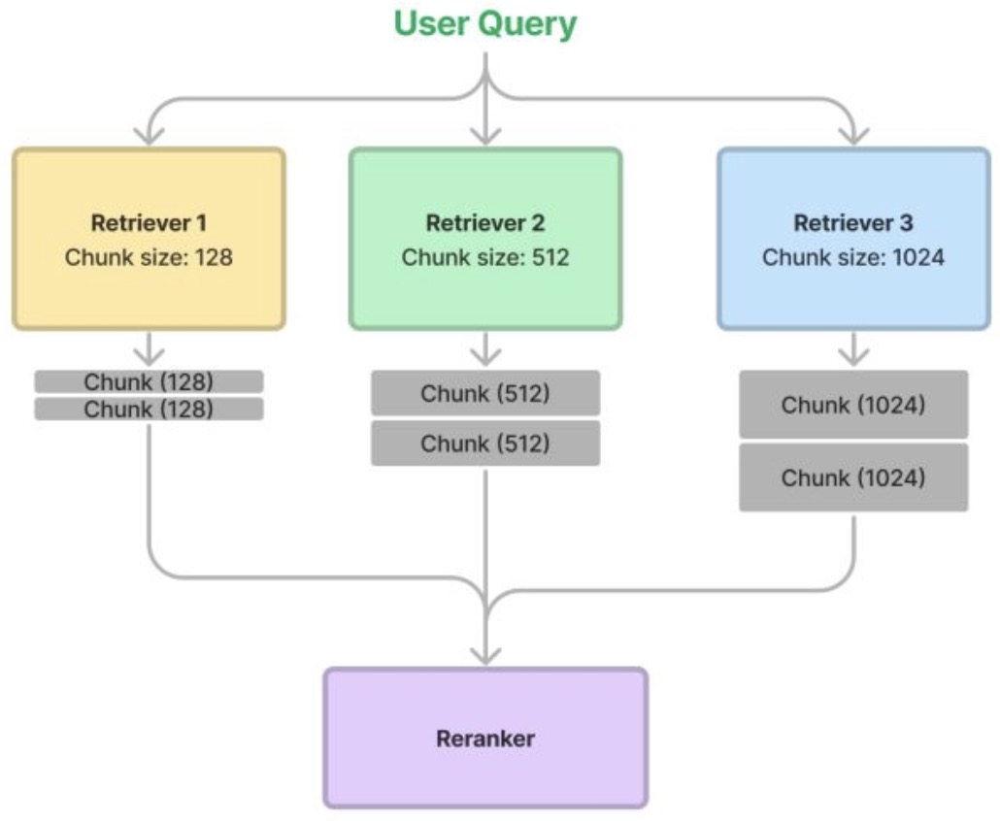
- According to evaluation data provided by LlamaIndex, the ensemble retrieval strategy leads to a modest improvement in faithfulness metrics, suggesting slightly enhanced relevance of retrieved content. However, pairwise comparisons show equal preference between the ensembled and baseline approaches, thereby leaving the superiority of ensembling open to debate.
- It is important to note that this ensembling methodology is not limited to variations in chunk size. It can also be extended to other dimensions of a RAG pipeline, including vector-based, keyword-based, and hybrid search strategies.
Embeddings
- Once you have your prompt chunked appropriately, the next step is to embed it. Embedding prompts and documents in RAG involves transforming both the user’s query (prompt) and the documents in the knowledge base into a format that can be effectively compared for relevance. This process is critical for RAG’s ability to retrieve the most relevant information from its knowledge base in response to a user query. Here’s how it typically works:
- One option to help pick which embedding model would be best suited for your task is to look at HuggingFace’s Massive Text Embedding Benchmark (MTEB) leaderboard. There is a question of whether a dense or sparse embedding can be used so let’s look into benefits of each below:
- Sparse embedding: Sparse embeddings such as TF-IDF are great for lexical matching the prompt with the documents. Best for applications where keyword relevance is crucial. It’s computationally less intensive but may not capture the deeper semantic meanings in the text.
- Semantic embedding: Semantic embeddings, such as BERT or SentenceBERT lend themselves naturally to the RAG use-case.
- BERT: Suitable for capturing contextual nuances in both the documents and queries. Requires more computational resources compared to sparse embeddings but offers more semantically rich embeddings.
- SentenceBERT: Ideal for scenarios where the context and meaning at the sentence level are important. It strikes a balance between the deep contextual understanding of BERT and the need for concise, meaningful sentence representations. This is usually the preferred route for RAG.
Naive Chunking vs. Late Chunking vs. Late Interaction (ColBERT and ColPali)
-
The choice between naive chunking, late chunking, and late interaction (ColBERT/ColPali) depends on the specific requirements of the retrieval task:
- Naive Chunking is suitable for scenarios with strict resource constraints but where retrieval precision is less critical.
- Late Chunking, introduced by JinaAI, offers an attractive middle ground, maintaining context and providing improved retrieval accuracy without incurring significant additional costs. Put simply, late chunking balances the trade-offs between cost and precision, making it an excellent option for building scalable and effective RAG systems, particularly in long-context retrieval scenarios.
- Late Interaction (ColBERT/ColPali) is best suited for applications where retrieval precision is paramount and resource costs are less of a concern.
-
Let’s explore the differences between three primary strategies: Naive Chunking, Late Chunking, and Late Interaction (ColBERT and ColPali), focusing on their methodologies, advantages, and trade-offs.
Overview
- Long-context retrieval presents a challenge when balancing precision, context retention, and cost efficiency. Solutions range from simple and low-cost, like Naive Chunking, to more sophisticated and resource-intensive approaches, such as Late Interaction ([ColBERT](https://arxiv.org/abs/2004.12832)). Late Chunking, a novel approach by JinaAI, offers a middle ground, preserving context with efficiency comparable to Naive Chunking.
Naive/Vanilla Chunking
What is Naive/Vanilla Chunking?
- As discussed in the Chunking section, naive/vanilla chunking divides a document into fixed-size chunks based on metrics like sentence boundaries or token count (e.g., 512 tokens per chunk).
- Each chunk is independently embedded into a vector without considering the context of neighboring chunks.
Example
-
Consider the following paragraph: Alice went for a walk in the woods one day and on her walk, she spotted something. She saw a rabbit hole at the base of a large tree. She fell into the hole and found herself in a strange new world.
-
If chunked by sentences:
- Chunk 1: “Alice went for a walk in the woods one day and on her walk, she spotted something.”
- Chunk 2: “She saw a rabbit hole at the base of a large tree.”
- Chunk 3: “She fell into the hole and found herself in a strange new world.”
Advantages and Limitations
- Advantages:
- Efficient in terms of storage and computation.
- Simple to implement and integrate with most retrieval pipelines.
- Limitations:
- Context Loss: Each chunk is processed independently, leading to a loss of contextual relationships. For example, the connection between “she” and “Alice” would be lost, reducing retrieval accuracy for context-heavy queries like “Where did Alice fall?”.
- Fragmented Meaning: Splitting paragraphs or semantically related sections can dilute the meaning of each chunk, reducing retrieval precision.
Late Chunking
What is Late Chunking?
- Late Chunking flips the order of vectorizing (i.e., embedding generation) and chunking compared to naive/vanilla chunking. In other words, it delays the chunking process until after the entire document has been embedded into token-level representations. This allows chunks to retain context from the full document, leading to richer, more contextually aware embeddings.
How Late Chunking Works
- Embedding First: The entire document is embedded into token-level representations using a long context model.
- Chunking After: After embedding, the token-level representations are pooled into chunks based on a predefined chunking strategy (e.g., 512-token chunks).
- Context Retention: Each chunk retains contextual information from the full document, allowing for improved retrieval precision without increasing storage costs.
Example
- Using the same paragraph:
- The entire paragraph is first embedded as a whole, preserving the relationships between all sentences.
- The document is then split into chunks after embedding, ensuring that chunks like “She fell into the hole…” are contextually aware of the mention of “Alice” from earlier sentences.
Advantages and Trade-offs
- Advantages:
- Context Preservation: Late chunking ensures that the relationship between tokens across different chunks is maintained.
- Efficiency: Late chunking requires the same amount of storage as naive chunking while significantly improving retrieval accuracy.
- Trade-offs:
- Requires Long Context Models: To embed the entire document at once, a model with long-context capabilities (e.g., supporting up to 8192 tokens) is necessary.
- Slightly Higher Compute Costs: Late chunking introduces an extra pooling step after embedding, although it’s more efficient than late interaction approaches like ColBERT.
Late Interaction
What is Late Interaction?
- Late Interaction refers to a retrieval approach where token embeddings for both the document and the query are computed separately and compared at the token level, without any pooling operation. The key advantage is fine-grained, token-level matching, which improves retrieval accuracy.
ColBERT: Late Interaction in Practice
- ColBERT (Contextualized Late Interaction over BERT) by Khattab et al. (2020) uses late interaction to compare individual token embeddings from the query and document using a MaxSim operator. This allows for granular, token-to-token comparisons, which results in highly precise matches but at a significantly higher storage cost.
MaxSim: A Key Component of ColBERT
- MaxSim (Maximum Similarity) is a core component of the ColBERT retrieval framework. It refers to a specific way of calculating the similarity between token embeddings of a query and document during retrieval.
- Here’s a step-by-step breakdown of how MaxSim works:
- Token-level Embedding Comparisons:
- When a query is processed, it is tokenized and each token is embedded separately (e.g., “apple” and “sweet”).
- The document is already indexed at the token level, meaning that each token in the document also has its own embedding.
- Similarity Computation:
- At query time, the system compares each query token embedding to every token embedding in the document. The similarity between two token embeddings is often measured using a dot product or cosine similarity.
- For example, given a query token
"apple"and a document containing tokens like"apple","banana", and"fruit", the system computes the similarity of"apple"to each of these tokens.
- Selecting Maximum Similarity (MaxSim):
- The system selects the highest similarity score between the query token and the document tokens. This is known as the MaxSim operation.
- In the above example, the system compares the similarity of
"apple"(query token) with all document tokens and selects the highest similarity score, say between"apple"and the corresponding token"apple"in the document.
- MaxSim Aggregation:
The MaxSim scores for each token in the query are aggregated (usually summed) to calculate a final relevance score for the document with respect to the query.
- This approach allows for token-level precision, capturing subtle nuances in the document-query matching that would be lost with traditional pooling methods.
- Token-level Embedding Comparisons:
Example
-
Consider the query
"sweet apple"and two documents:- Document 1: “The apple is sweet and crisp.”
- Document 2: “The banana is ripe and yellow.”
-
Each query token,
"sweet"and"apple", is compared with every token in both documents:- For Document 1,
"sweet"has a high similarity with"sweet"in the document, and"apple"has a high similarity with"apple". - For Document 2,
"sweet"does not have a strong match with any token, and"apple"does not appear.
- For Document 1,
-
Using MaxSim, Document 1 would have a higher relevance score for the query than Document 2 because the most similar tokens in Document 1 (i.e.,
"sweet"and"apple") align more closely with the query tokens.
Advantages and Trade-offs
- Advantages:
- High Precision: ColBERT’s token-level comparisons, facilitated by MaxSim, lead to highly accurate retrieval, particularly for specific or complex queries.
- Flexible Query Matching: By calculating similarity at the token level, ColBERT can capture fine-grained relationships that simpler models might overlook.
- Trade-offs:
- Storage Intensive: Storing all token embeddings for each document can be extremely costly. For example, storing token embeddings for a corpus of 100,000 documents could require upwards of 2.46 TB.
- Computational Complexity: While precise, MaxSim increases computational demands at query time, as each token in the query must be compared to all tokens in the document.
ColPali: Expanding to Multimodal Retrieval
- ColPali by Faysse et al. (2024) integrates the late interaction mechanism from ColBERT with a Vision Language Model (VLM) called PaliGemma to handle multimodal documents, such as PDFs with text, images, and tables. Instead of relying on OCR and layout parsing, ColPali uses screenshots of PDF pages to directly embed both visual and textual content. This enables powerful multimodal retrieval in complex documents.
Example
- Consider a complex PDF with both text and images. ColPali treats each page as an image and embeds it using a VLM. When a user queries the system, the query is matched with embedded screenshots via late interaction, improving the ability to retrieve relevant pages based on both visual and textual content.
Comparative Analysis
| Metric | Naive Chunking | Late Chunking | Late Interaction ([ColBERT](https://arxiv.org/abs/2004.12832)) |
|---|---|---|---|
| Storage Requirements | Minimal storage, ~4.9 GB for 100,000 documents | Same as naive chunking, ~4.9 GB for 100,000 documents | Extremely high storage, ~2.46 TB for 100,000 documents |
| Retrieval Precision | Lower precision due to context fragmentation | Improved precision by retaining context across chunks | Highest precision with token-level matching |
| Complexity and Cost | Simple implementation, minimal resources | Moderately more complex, efficient in compute and storage | Highly complex, resource-intensive in both storage and computation |
Sentence Embeddings: The What and Why
Background: Differences compared to Token-Level Models like BERT
- As an overview, let’s look into how sentence transformers differ compared to token-level embedding models such as BERT.
- Sentence Transformers are a modification of the traditional BERT model, tailored specifically for generating embeddings of entire sentences (i.e., sentence embeddings). The key differences in their training approaches are:
- Objective: BERT is trained to predict masked words in a sentence and next sentence prediction. It’s optimized for understanding words and their context within a sentence. Sentence Transformers, on the other hand, are trained specifically to understand the meaning of entire sentences. They generate embeddings where sentences with similar meanings are close in the embedding space.
- Level of Embedding: The primary difference lies in the level of embedding. BERT provides embeddings for each token (word or subword) in a sentence, whereas sentence transformers provide a single embedding for the entire sentence.
- Training Data and Tasks: While BERT is primarily trained on large text corpora with tasks focused on understanding words in context, Sentence Transformers are often trained on data sets that include sentence pairs. This training focuses on similarity and relevance, teaching the model how to understand and compare the meanings of entire sentences.
- Siamese and Triplet Network Structures: Sentence Transformers often use Siamese or Triplet network structures. These networks involve processing pairs or triplets of sentences and adjusting the model so that similar sentences have similar embeddings, and dissimilar sentences have different embeddings. This is different from BERT’s training, which does not inherently involve direct comparison of separate sentences.
- Fine-Tuning for Specific Tasks: Sentence Transformers are often fine-tuned on specific tasks like semantic similarity, paraphrase identification, or information retrieval. This fine-tuning is more focused on sentence-level understanding as opposed to BERT, which might be fine-tuned for a wider range of NLP tasks like question answering, sentiment analysis, etc., focusing on word or phrase-level understanding.
- Applicability: BERT and similar models are more versatile for tasks that require understanding at the token level (like named entity recognition, question answering), whereas sentence transformers are more suited for tasks that rely on sentence-level understanding (like semantic search, sentence similarity).
- Efficiency in Generating Sentence Embeddings or Similarity Tasks: In standard BERT, generating sentence embeddings usually involves taking the output of one of the hidden layers (often the first token,
[CLS]) as a representation of the whole sentence. However, this method is not always optimal for sentence-level tasks. Sentence Transformers are specifically optimized to produce more meaningful and useful sentence embeddings and are thus more efficient for tasks involving sentence similarity computations. Since they produce a single vector per sentence, computing similarity scores between sentences is computationally less intensive compared to token-level models.
- In summary, while BERT is a general-purpose language understanding model with a focus on word-level contexts, Sentence Transformers are adapted specifically for understanding and comparing the meanings of entire sentences, making them more effective for tasks that require sentence-level semantic understanding.
Related: Training Process for Sentence Transformers vs. Token-Level Embedding Models
- Let’s look into how sentence transformers trained differently compared to token-level embedding models such as BERT.
- Sentence transformers are trained to generate embeddings at the sentence level, which is a distinct approach from token-level embedding models like BERT. Here’s an overview of their training and how it differs from token-level models:
- Model Architecture: Sentence transformers often start with a base model similar to BERT or other transformer architectures. However, the focus is on outputting a single embedding vector for the entire input sentence, rather than individual tokens.
- Training Data: They are trained on a variety of datasets, often including pairs or groups of sentences where the relationship (e.g., similarity, paraphrasing) between the sentences is known.
- Training Objectives: BERT is pre-trained on objectives like masked language modeling (predicting missing words) and next sentence prediction, which are focused on understanding the context at the token level. Sentence transformers, on the other hand, are trained specifically to understand the context and relationships at the sentence level. Their training objective is typically to minimize the distance between embeddings of semantically similar sentences while maximizing the distance between embeddings of dissimilar sentences. This is achieved through contrastive loss functions like triplet loss, cosine similarity loss, etc.
- Output Representation: In BERT, the sentence-level representation is typically derived from the embedding of a special token (like
[CLS]) or by pooling (i.e., averaging) token embeddings. Sentence transformers are designed to directly output a meaningful sentence-level representation. - Fine-tuning for Downstream Tasks: Sentence transformers can be fine-tuned on specific tasks, such as semantic text similarity, where the model learns to produce embeddings that capture the nuanced meaning of entire sentences.
- In summary, sentence transformers are specifically optimized for producing representations at the sentence level, focusing on capturing the overall semantics of sentences, which makes them particularly useful for tasks involving sentence similarity and clustering. This contrasts with token-level models like BERT, which are more focused on understanding and representing the meaning of individual tokens within their wider context.
Applying Sentence Transformers for RAG
- Now, let’s look into why sentence transformers are the numero uno choice of models to generate embeddings for RAG.
- RAG leverages Sentence Transformers for their ability to understand and compare the semantic content of sentences. This integration is particularly useful in scenarios where the model needs to retrieve relevant information before generating a response. Here’s how Sentence Transformers are useful in a RAG setting:
- Improved Document Retrieval: Sentence Transformers are trained to generate embeddings that capture the semantic meaning of sentences. In a RAG setting, these embeddings can be used to match a query (like a user’s question) with the most relevant documents or passages in a database. This is critical because the quality of the generated response often depends on the relevance of the retrieved information.
- Efficient Semantic Search: Traditional keyword-based search methods might struggle with understanding the context or the semantic nuances of a query. Sentence Transformers, by providing semantically meaningful embeddings, enable more nuanced searches that go beyond keyword matching. This means that the retrieval component of RAG can find documents that are semantically related to the query, even if they don’t contain the exact keywords.
- Contextual Understanding for Better Responses: By using Sentence Transformers, the RAG model can better understand the context and nuances of both the input query and the content of potential source documents. This leads to more accurate and contextually appropriate responses, as the generation component of the model has more relevant and well-understood information to work with.
- Scalability in Information Retrieval: Sentence Transformers can efficiently handle large databases of documents by pre-computing embeddings for all documents. This makes the retrieval process faster and more scalable, as the model only needs to compute the embedding for the query at runtime and then quickly find the closest document embeddings.
- Enhancing the Generation Process: In a RAG setup, the generation component benefits from the retrieval component’s ability to provide relevant, semantically-rich information. This allows the language model to generate responses that are not only contextually accurate but also informed by a broader range of information than what the model itself was trained on.
- In summary, Sentence Transformers enhance the retrieval capabilities of RAG models with LLMs by enabling more effective semantic search and retrieval of information. This leads to improved performance in tasks that require understanding and generating responses based on large volumes of text data, such as question answering, chatbots, and information extraction.
Retrieval
- Let’s look at three different types of retrieval: standard, sentence window, and auto-merging. Each of these approaches has specific strengths and weaknesses, and their suitability depends on the requirements of the RAG task, including the nature of the dataset, the complexity of the queries, and the desired balance between specificity and contextual understanding in the responses.
Standard/Naive approach
- As we see in the image below (source), the standard pipeline uses the same text chunk for indexing/embedding as well as the output synthesis.
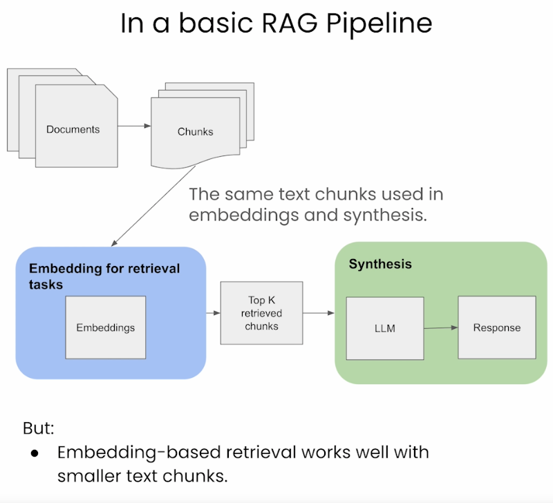
- In the context of RAG in LLMs, here are the advantages and disadvantages of the three approaches:
Advantages
- Simplicity and Efficiency: This method is straightforward and efficient, using the same text chunk for both embedding and synthesis, simplifying the retrieval process.
- Uniformity in Data Handling: It maintains consistency in the data used across both retrieval and synthesis phases.
Disadvantages
- Limited Contextual Understanding: LLMs may require a larger window for synthesis to generate better responses, which this approach may not adequately provide.
- Potential for Suboptimal Responses: Due to the limited context, the LLM might not have enough information to generate the most relevant and accurate responses.
Sentence-Window Retrieval / Small-to-Large Retrieval
- The sentence-window approach breaks down documents into smaller units, such as sentences or small groups of sentences.
- It decouples the embeddings for retrieval tasks (which are smaller chunks stored in a Vector DB), but for synthesis it adds back in the context around the retrieved chunks, as seen in the image below (source).
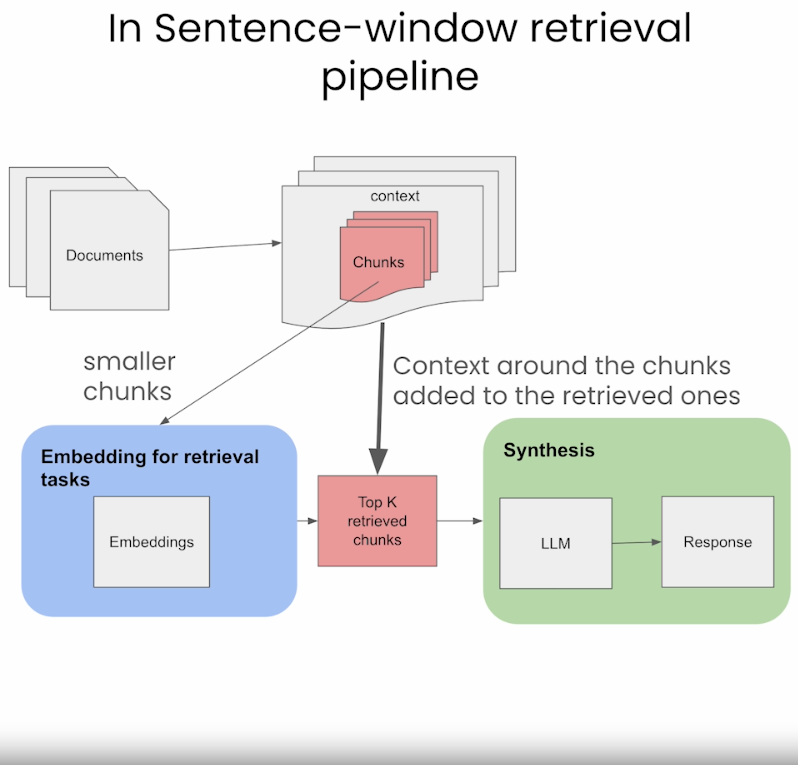
- During retrieval, we retrieve the sentences that are most relevant to the query via similarity search and replace the sentence with the full surrounding context (using a static sentence-window around the context, implemented by retrieving sentences surrounding the one being originally retrieved) as shown in the figure below (source).
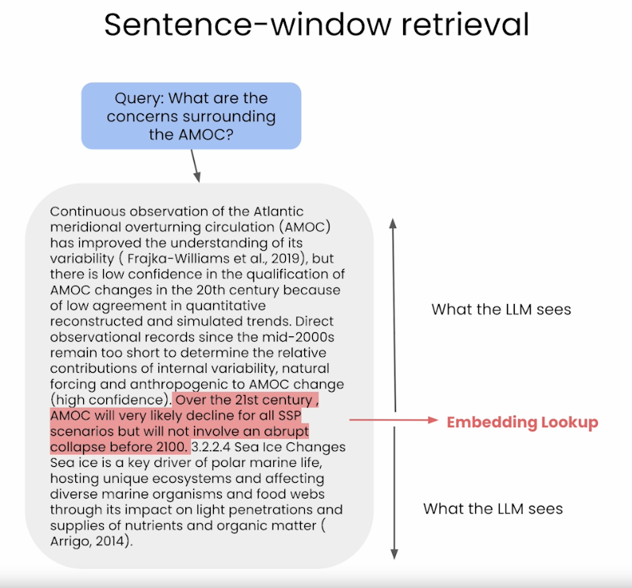
Advantages
- Enhanced Specificity in Retrieval: By breaking documents into smaller units, it enables more precise retrieval of segments directly relevant to a query.
- Context-Rich Synthesis: It reintroduces context around the retrieved chunks for synthesis, providing the LLM with a broader understanding to formulate responses.
- Balanced Approach: This method strikes a balance between focused retrieval and contextual richness, potentially improving response quality.
Disadvantages
- Increased Complexity: Managing separate processes for retrieval and synthesis adds complexity to the pipeline.
- Potential Contextual Gaps: There’s a risk of missing broader context if the surrounding information added back is not sufficiently comprehensive.
Auto-merging Retriever / Hierarchical Retriever
- The image below (source), illustrates how auto-merging retrieval can work where it doesn’t retrieve a bunch of fragmented chunks as would happen with the naive approach.
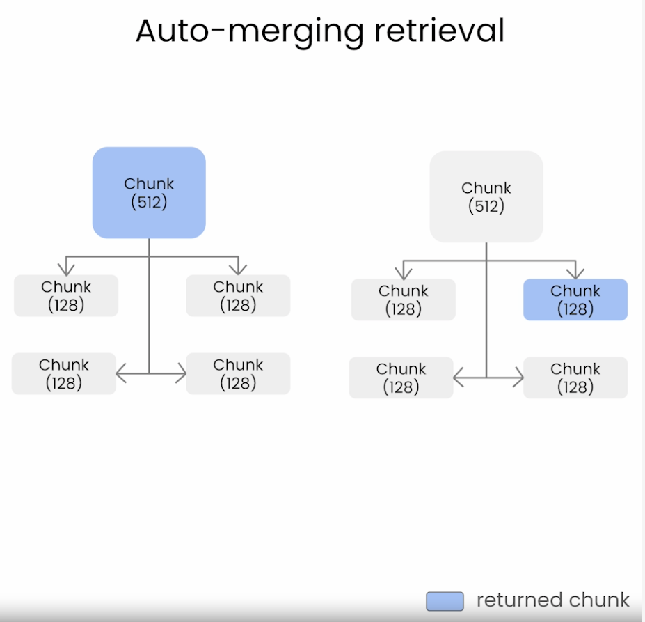
- The fragmentation in the naive approach would be worse with smaller chunk sizes as shown below (source).
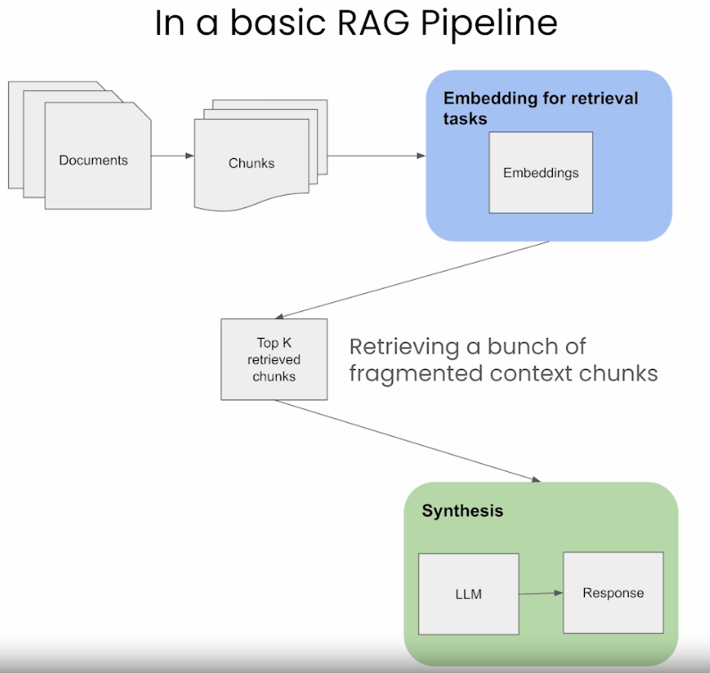
- Auto-merging retrieval aims to combine (or merge) information from multiple sources or segments of text to create a more comprehensive and contextually relevant response to a query. This approach is particularly useful when no single document or segment fully answers the query but rather the answer lies in combining information from multiple sources.
- It allows smaller chunks to be merged into bigger parent chunks. It does this via the following steps:
- Define a hierarchy of smaller chunks linked to parent chunks.
- If the set of smaller chunks linking to a parent chunk exceeds some threshold (say, cosine similarity), then “merge” smaller chunks into the bigger parent chunk.
- The method will finally retrieve the parent chunk for better context.
Advantages
- Comprehensive Contextual Responses: By merging information from multiple sources, it creates responses that are more comprehensive and contextually relevant.
- Reduced Fragmentation: This approach addresses the issue of fragmented information retrieval, common in the naive approach, especially with smaller chunk sizes.
- Dynamic Content Integration: It dynamically combines smaller chunks into larger, more informative ones, enhancing the richness of the information provided to the LLM.
Disadvantages
- Complexity in Hierarchy and Threshold Management: The process of defining hierarchies and setting appropriate thresholds for merging is complex and critical for effective functioning.
- Risk of Over-generalization: There’s a possibility of merging too much or irrelevant information, leading to responses that are too broad or off-topic.
- Computational Intensity: This method might be more computationally intensive due to the additional steps in merging and managing the hierarchical structure of text chunks.
Contextual Retrieval
- For LLMs to deliver relevant and accurate responses, they must retrieve the right information from a knowledge base. Traditional RAG improves model accuracy by fetching relevant text chunks and appending them to the prompt. However, such methods often remove crucial context when encoding information, leading to failed retrievals and suboptimal outputs.
- Contextual Retrieval, introduced by Anthropic, is an advanced technique designed to improve this process by ensuring that retrieved chunks maintain their original context. It employs contextual embeddings – embeddings that incorporate chunk-specific background information and contextual BM25 – an enhanced BM25 ranking that considers the broader document context.
-
By prepending contextual metadata to each document chunk before embedding, Contextual Retrieval significantly enhances search accuracy. This approach reduces failed retrievals by 49% and, when combined with reranking, by 67%.
- Why Context Matters in Retrieval:
- Traditional RAG solutions divide documents into small chunks for efficient retrieval. However, these fragments often lose critical context. For example, the statement “The company’s revenue grew by 3% over the previous quarter” lacks information about which company or quarter it refers to. Contextual Retrieval solves this by embedding relevant metadata into each chunk.
- Implementation of Contextual Retrieval:
- To implement Contextual Retrieval, a model like Claude 3 Haiku can generate concise context for each chunk. This context is then prepended before embedding and indexing, ensuring more precise retrieval. Developers can automate this process at scale using specialized retrieval pipelines.
- Prompt Used for Contextual Retrieval:
- Anthropic’s method involves using Claude to generate a short, document-specific context for each chunk using the following prompt:
<document> </document> Here is the chunk we want to situate within the whole document: <chunk> </chunk> Please give a short, succinct context to situate this chunk within the overall document for the purposes of improving search retrieval of the chunk. Answer only with the succinct context and nothing else. - This process automatically generates a concise contextualized description that is prepended to the chunk before embedding and indexing.
- Anthropic’s method involves using Claude to generate a short, document-specific context for each chunk using the following prompt:
- Combining Contextual Retrieval with Reranking:
- For maximum performance, Contextual Retrieval can be paired with reranking models, which filter and reorder retrieved chunks based on their relevance. This additional step enhances retrieval precision, ensuring only the most relevant chunks are passed to the LLM.
- The following flowchart from Anthropic’s blog shows the combined contextual retrieval and reranking stages which seek to maximize retrieval accuracy.
- Key Takeaways:
- Contextual Embeddings improve retrieval accuracy by preserving document meaning.
- BM25 + Contextualization enhances exact-match retrieval.
- Combining Contextual Retrieval with reranking further boosts retrieval effectiveness.
- Developers can implement Contextual Retrieval using prompt-based preprocessing and automated pipelines.
- With Contextual Retrieval, LLM-powered knowledge systems can achieve greater accuracy, scalability, and relevance, unlocking new levels of performance in real-world applications.
Using Approximate Nearest Neighbors (ANN) for Retrieval
- The next step is to consider which approximate nearest neighbors (ANN) library to choose from indexing. One option to pick the best option is to look at ANN-Benchmarks.
- A detailed discourse on the concept of ANN can be found in our ANN primer.
Re-ranking
- Re-ranking is an optional yet critical component in RAG pipelines, functioning as the refinement stage where an initially retrieved candidate set—usually limited to dozens of documents or passages—is reordered based on their relevance to the input query. This step ensures that the most pertinent content is prioritized for inclusion in the final prompt presented to the language model.
- As the candidate set is small, computationally intensive but accurate re-ranking techniques are feasible, with neural Learning-to-Rank (LTR) models being the most commonly used.
Neural Re-rankers: Types and Architectures
-
Neural re-rankers are broadly classified into three methodological paradigms based on how they evaluate relevance: pointwise, pairwise, and listwise. Each of these paradigms corresponds to specific models: monoBERT exemplifies the pointwise approach, duoBERT represents the pairwise method, and ListBERT along with ListT5 embody the listwise strategy, as detailed below:
-
monoBERT, proposed by Nogueira et al. (2019) in Multi-Stage Document Ranking with BERT, scores each document-query pair independently using BERT as a cross-encoder. Each document is concatenated with the query, and a relevance score is predicted for that pair alone. This makes monoBERT a pointwise model, offering high-quality relevance estimation but at a high inference cost when applied to many pairs.
-
duoBERT, also proposed by Nogueira et al. (2019) in Multi-Stage Document Ranking with BERT, extends monoBERT by comparing pairs of documents relative to a given query. It predicts which of two documents is more relevant, allowing for more nuanced and direct ranking decisions. This pairwise approach helps resolve fine-grained distinctions in relevance that monoBERT might overlook.
-
ListBERT, proposed by Kumar et al. (2022) in ListBERT: Learning to Rank E-commerce products with Listwise BERT, brings a listwise learning paradigm to transformer-based ranking. Instead of scoring documents independently or in pairs, ListBERT considers a full list of documents simultaneously. It uses listwise loss functions tailored for ranking tasks (e.g., ListMLE, Softmax Cross Entropy) and was originally applied in the context of e-commerce to rank products effectively.
-
ListT5, proposed by Yoon et al. (2024) in ListT5: Listwise Reranking with Fusion-in-Decoder Improves Zero-shot Retrieval, advances the listwise approach further by employing a Fusion-in-Decoder (FiD) architecture adapted from T5. This model jointly attends to multiple candidate documents during both training and inference, making it particularly suitable for zero-shot retrieval scenarios. It has shown state-of-the-art performance in contexts requiring the ranking of passages with minimal labeled data.
-
-
While monoBERT and duoBERT utilize cross-encoder architectures, ListBERT and ListT5 employ different mechanisms. ListBERT uses a listwise approach with BERT, and ListT5 is based on a Fusion-in-Decoder (FiD) architecture adapted from T5, which is not a traditional cross-encoder.
Domain-Specific Adaptations
- Reranking models can also be fine-tuned for specific domains to improve performance in specialized applications. For instance, Legal-BERT has been adapted for tasks like legal document classification and contract clause retrieval, demonstrating that domain-specific pretraining significantly boosts accuracy in re-ranking. Similar adaptations exist in finance, healthcare, and technical fields where vocabulary and relevance judgments differ markedly from general-purpose datasets.
Instruction-Following Re-ranking: Precision and Control in RAG
-
A growing frontier in reranking is instruction-following re-ranking, which introduces the ability to control ranking behavior using natural language instructions. This approach addresses the limitations of static relevance criteria by allowing dynamic, context-specific customization, which is particularly beneficial in enterprise RAG systems where documents may conflict or vary in trustworthiness and recency.
-
Examples of Natural Language Instructions:
- “Prioritize internal documentation over third-party sources. Favor the most recent information.”
- “Disregard news summaries. Emphasize detailed technical reports from trusted analysts.”
-
Advantages:
- Dynamic Relevance Modeling: Instructions enable runtime tuning of what “relevance” means, depending on the user’s intent or business context.
- Conflict Resolution: They allow systems to resolve contradictory or overlapping sources by enforcing prioritization rules.
- Prompt Optimization: Ensuring higher-quality content appears earlier in the prompt helps maximize the utility of the limited context window, where the LLM’s attention is most focused.
-
Implementation and Deployment:
- These rerankers are often deployed as standalone APIs or integrated modules that rescore a shortlist of candidate documents after the initial retrieval phase. They can be combined with other techniques such as late chunking or retriever ensembling, effectively acting as the final curation layer before the documents are fed into the language model.
- A notable example of this is Contextual AI’s system, presented in their post on the world’s first instruction-following reranker, which demonstrates real-world integration of this technology.
Response Generation / Synthesis
- The last step of the RAG pipeline is to generate responses back to the user. In this step, the model synthesizes the retrieved information with its pre-trained knowledge to generate coherent and contextually relevant responses. This process involves integrating the insights gleaned from various sources, ensuring accuracy and relevance, and crafting a response that is not only informative but also aligns with the user’s original query, maintaining a natural and conversational tone.
- Note that while creating the expanded prompt (with the retrieved top-\(k\) chunks) for an LLM to make an informed response generation, a strategic placement of vital information at the beginning or end of input sequences could enhance the RAG system’s effectiveness and thus make the system more performant. This is summarized in the paper below.
Lost in the Middle: How Language Models Use Long Contexts
- While recent language models have the ability to take long contexts as input, relatively little is known about how well the language models use longer context.
- This paper by Liu et al. from Percy Liang’s lab at Stanford, UC Berkeley, and Samaya AI analyzes language model performance on two tasks that require identifying relevant information within their input contexts: multi-document question answering and key-value retrieval. Put simply, they analyze and evaluate how LLMs use the context by identifying relevant information within it.
- They tested open-source (MPT-30B-Instruct, LongChat-13B) and closed-source (OpenAI’s GPT-3.5-Turbo and Anthropic’s Claude 1.3) models. They used multi-document question-answering where the context included multiple retrieved documents and one correct answer, whose position was shuffled around. Key-value pair retrieval was carried out to analyze if longer contexts impact performance.
- They find that performance is often highest when relevant information occurs at the beginning or end of the input context, and significantly degrades when models must access relevant information in the middle of long contexts. In other words, their findings basically suggest that Retrieval-Augmentation (RAG) performance suffers when the relevant information to answer a query is presented in the middle of the context window with strong biases towards the beginning and the end of it.
- A summary of their learnings is as follows:
- Best performance when the relevant information is at the beginning.
- Performance decreases with an increase in context length.
- Too many retrieved documents harm performance.
- Improving the retrieval and prompt creation step with a ranking stage could potentially boost performance by up to 20%.
- Extended-context models (GPT-3.5-Turbo vs. GPT-3.5-Turbo (16K)) are not better if the prompt fits the original context.
- Considering that RAG retrieves information from an external database – which most commonly contains longer texts that are split into chunks. Even with split chunks, context windows get pretty large very quickly, at least much larger than a “normal” question or instruction. Furthermore, performance substantially decreases as the input context grows longer, even for explicitly long-context models. Their analysis provides a better understanding of how language models use their input context and provides new evaluation protocols for future long-context models.
- “There is no specific inductive bias in transformer-based LLM architectures that explains why the retrieval performance should be worse for text in the middle of the document. I suspect it is all because of the training data and how humans write: the most important information is usually in the beginning or the end (think paper Abstracts and Conclusion sections), and it’s then how LLMs parameterize the attention weights during training.” (source)
- In other words, human text artifacts are often constructed in a way where the beginning and the end of a long text matter the most which could be a potential explanation to the characteristics observed in this work.
- You can also model this with the lens of two popular cognitive biases that humans face (primacy and recency bias), as in the following figure (source).

- The final conclusion is that combining retrieval with ranking (as in recommender systems) should yield the best performance in RAG for question answering.
- The following figure (source) shows an overview of the idea proposed in the paper: “LLMs are better at using info at beginning or end of input context”.

- The following figure from the paper illustrates the effect of changing the position of relevant information (document containing the answer) on multidocument question answering performance. Lower positions are closer to the start of the input context. Performance is generally highest when relevant information is positioned at the very start or very end of the context, and rapidly degrades when models must reason over information in the middle of their input context.

The “Needle in a Haystack” Test
- To understand the in-context retrieval ability of long-context LLMs over various parts of their prompt, a simple ‘needle in a haystack’ analysis could be conducted. This method involves embedding specific, targeted information (the ‘needle’) within a larger, more complex body of text (the ‘haystack’). The purpose is to test the LLM’s ability to identify and utilize this specific piece of information amidst a deluge of other data.
- In practical terms, the analysis could involve inserting a unique fact or data point into a lengthy, seemingly unrelated text. The LLM would then be tasked with tasks or queries that require it to recall or apply this embedded information. This setup mimics real-world situations where essential details are often buried within extensive content, and the ability to retrieve such details is crucial.
- The experiment could be structured to assess various aspects of the LLM’s performance. For instance, the placement of the ‘needle’ could be varied—early, middle, or late in the text—to see if the model’s retrieval ability changes based on information location. Additionally, the complexity of the surrounding ‘haystack’ can be modified to test the LLM’s performance under varying degrees of contextual difficulty. By analyzing how well the LLM performs in these scenarios, insights can be gained into its in-context retrieval capabilities and potential areas for improvement.
- This can be accomplished using the Needle In A Haystack library. The following plot shows OpenAI’s GPT-4-128K’s (top) and (bottom) performance with varying context length.
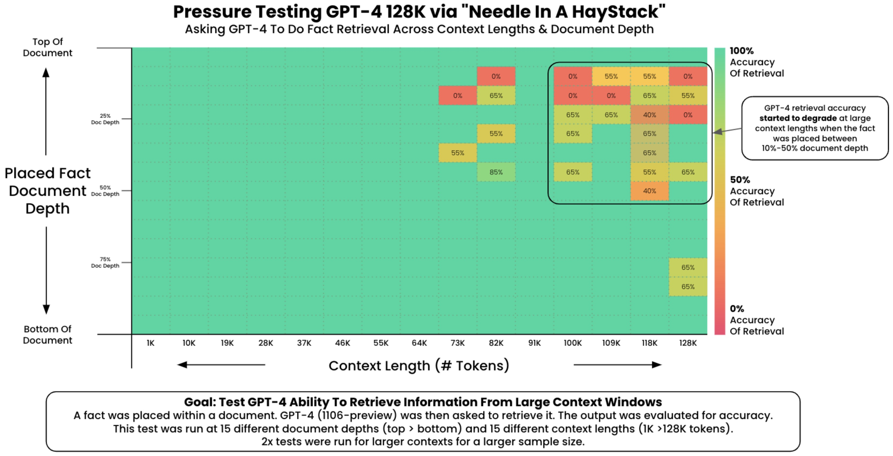
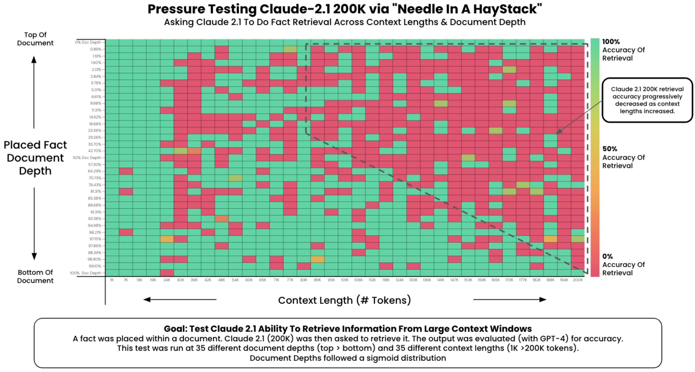
- The following figure (source) shows Claude 2.1’s long context question answering errors based on the areas of the prompt context length. On an average, Claude 2.1 demonstrated a 30% reduction in incorrect answers compared to Claude 2.
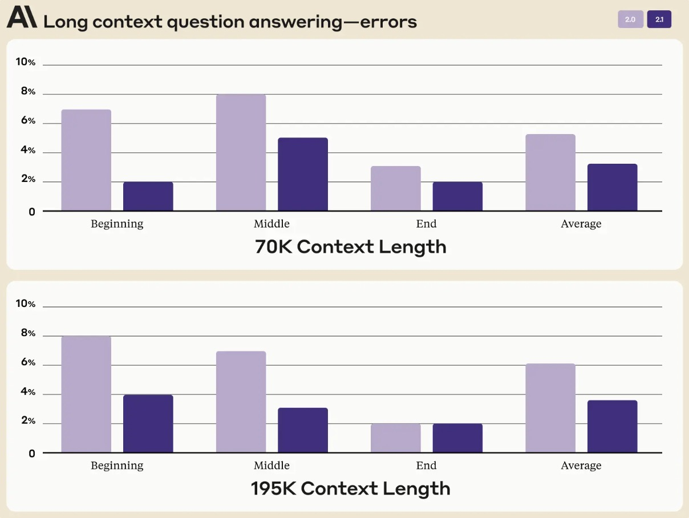
- However, in Anthropic’s Long context prompting for Claude 2.1 blog, Anthropic noted that adding “Here is the most relevant sentence in the context:” to the start of Claude’s response raised the score from 27% to 98% on the original evaluation! The figure below from the blog shows that Claude 2.1’s performance when retrieving an individual sentence across its full 200K token context window. This experiment uses the aforementioned prompt technique to guide Claude in recalling the most relevant sentence.
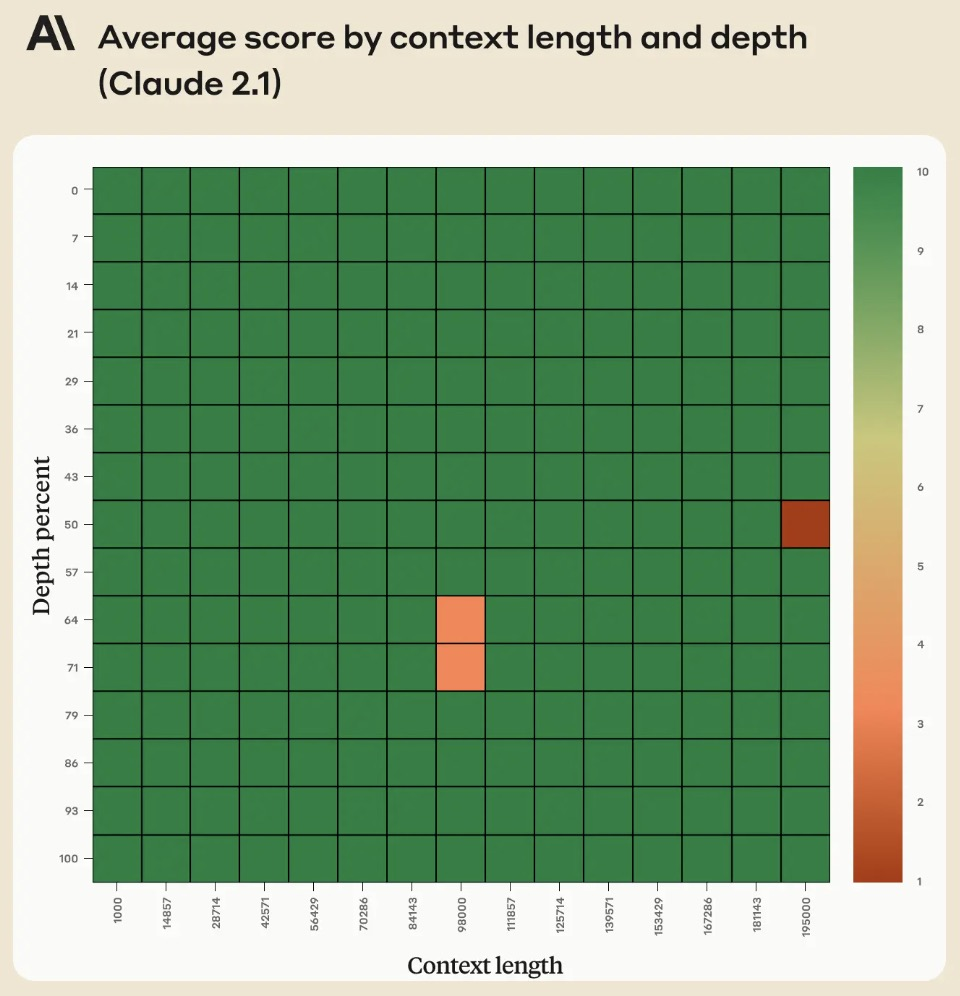
RAG in Multi-Turn Chatbots: Embedding Queries for Retrieval
-
In multi-turn chatbot environments, RAG must extend beyond addressing isolated, single-turn queries. Conversations are inherently dynamic—context accumulates, user objectives evolve, and intent may shift subtly across multiple interactions. This dynamic nature renders one design decision particularly critical: determining which input text should be embedded during the retrieval phase. This decision has a direct impact on both the relevance of the retrieved content and the overall quality of the generated response.
-
In contrast to single-turn systems, where embedding the current user input may suffice, multi-turn RAG systems face a more fluid and complex challenge. Limiting retrieval inputs to only the most recent user message is computationally efficient but often insufficient for capturing the nuances of ongoing discourse. Incorporating recent conversational turns offers improved contextual grounding, while advanced techniques such as summarization and query rewriting can significantly enhance retrieval precision.
-
There is no universally optimal approach—the most suitable strategy depends on factors such as the application’s specific requirements, available computational resources, and tolerance for system complexity. Nevertheless, the most robust implementations often adopt a layered methodology: integrating recent dialogue context, monitoring evolving user intent, and utilizing reformulated or enriched queries. This composite approach typically results in more accurate, contextually appropriate retrieval and, consequently, more coherent and effective responses.
-
The following sections outlines the key strategies and considerations for query embedding in multi-turn RAG chatbot systems.
Embedding the Latest User Turn Only
- The simplest approach is to embed just the latest user message. For example, if a user says, “What are the symptoms of Lyme disease?”, that exact sentence is passed to the retriever for embedding.
- Pros:
- Fast and computationally cheap.
- Reduces the risk of embedding irrelevant or stale context.
- Cons:
- Ignores conversational context and prior turns, which may contain critical disambiguating details (e.g., “Is it common in dogs?” following a discussion about pets).
Embedding Concatenated Recent Turns (Truncated Dialogue History)
- A more nuanced approach involves embedding the current user message along with a sliding window of recent turns (usually alternating user and assistant messages).
- For example:
User: My dog has been acting strange lately. Assistant: Can you describe the symptoms? User: He’s tired, limping, and has a fever. Could it be Lyme disease?- The retriever input would include all or part of the above.
- Pros:
- Preserves immediate context that can significantly improve retrieval relevance.
- Especially useful for resolving pronouns and follow-up queries.
- Cons:
- Can dilute the focus of the query if too many irrelevant prior turns are included.
- Risk of exceeding input length limits for embedding models.
Embedding a Condensed or Summarized History
- In this strategy, prior turns are summarized into a condensed form before concatenation with the current turn. This reduces token count while preserving key context.
- Can be achieved using simple heuristics, hand-written rules, or another lightweight LLM summarization pass.
- For example:
Condensed history: The user is concerned about their dog's health, showing signs of fatigue and limping. Current query: Could it be Lyme disease?- Embed the concatenated string: “The user is concerned… Could it be Lyme disease?”
- Pros:
- Retains relevant prior context while minimizing noise.
- Helps improve retrieval accuracy for ambiguous follow-up questions.
- Cons:
- Requires additional processing and potential summarization latency.
- Summarization quality can affect retrieval quality.
Embedding Structured Dialogue State
- This approach formalizes the conversation history into a structured format (like intent, entities, or user goals), which is then appended to the latest query before embedding.
- For instance:
[Intent: Diagnose pet illness] [Entity: Dog] [Symptoms: fatigue, limping, fever] Query: Could it be Lyme disease? - Pros:
- Allows precision targeting of relevant documents, especially in domain-specific applications.
- Supports advanced reasoning by aligning with KBs or ontology-driven retrieval.
- Cons:
- Requires reliable NLU and state-tracking pipelines.
- Adds system complexity.
Task-Optimized Embedding via Query Reformulation
- Some systems apply a query rewriting model that reformulates the latest turn into a fully self-contained question, suitable for retrieval.
- For example, turning “What about dogs?” into “What are the symptoms of Lyme disease in dogs?”
- These reformulated queries are then embedded for retrieval.
- Pros:
- Ensures clarity and focus in queries passed to the retriever.
- Significantly boosts retrieval performance in ambiguous or shorthand follow-ups.
- Cons:
- Introduces dependency on a high-quality rewrite model.
- Risk of introducing hallucination or incorrect reformulations.
Best Practices and Considerations
- Window Size: Most systems use a sliding window of 1-3 previous turns depending on token limits and task specificity.
- Query Length vs. Clarity Tradeoff: Longer queries with more context may capture nuance but risk introducing noise. Condensed or reformulated queries can help mitigate this.
- Personalization: In some advanced setups, user profiles or long-term memory can be injected into the retrieval query, but this must be carefully curated to avoid privacy or relevance pitfalls.
- System Goals: If the chatbot is task-oriented (e.g., booking travel), structured state may be best. If it is open-domain (e.g., a virtual assistant), concatenated dialogue or rewrite strategies tend to perform better.
Component-Wise Evaluation
- Component-wise evaluation in RAG systems for LLMs involves assessing individual components of the system separately. This approach typically examines the performance of the retrieval component, which fetches relevant information from a database or corpus, and the generation component, which synthesizes responses based on the retrieved data. By evaluating these components individually, researchers can identify specific areas for improvement in the overall RAG system, leading to more efficient and accurate information retrieval and response generation in LLMs.
- While metrics such as Context Precision, Context Recall, and Context Relevance provide insights into the performance of the retrieval component of the RAG system, Groundedness, and Answer Relevance offer a view into the quality of the generation.
- Specifically,
- Metrics to evaluate retrieval: Context Relevance, Context Recall, and Context Precision, which collectively assess the relevance, completeness, and accuracy of the information retrieved in response to a user’s query. Context Precision focuses on the system’s ability to rank relevant items higher, Context Recall evaluates how well the system retrieves all relevant parts of the context, and Context Relevance measures the alignment of retrieved information with the user’s query. These metrics ensure the effectiveness of the retrieval system in providing the most relevant and complete context for generating accurate responses.
- Metrics to evaluate generation: Faithfulness and Answer Relevance, which measure the factual consistency of the generated answer with the given context and its relevance to the original question, respectively. Faithfulness focuses on the factual accuracy of the answer, ensuring all claims made can be inferred from the given context. Answer Relevance assesses how well the answer addresses the original question, penalizing incomplete or redundant responses. These metrics ensure the generation component produces contextually appropriate and semantically relevant answers.
- The harmonic mean of these four aspects gives you the overall score (also called ragas score) which is a single measure of the performance of your RAG system across all the important aspects.
- Most of the measurements do not require any labeled data, making it easier for users to run it without worrying about building a human-annotated test dataset first. In order to run ragas all you need is a few questions and if your using context_recall, a reference answer.
- Overall, these metrics offer a comprehensive view of the RAG system’s retrieval performance, which can be implemented using libraries for evaluating RAG pipelines such as Ragas or TruLens and offer detailed insights about your RAG pipeline’s performance, focusing on the contextual and factual alignment of retrieved and generated content in response to user queries. Specifically, Ragas, offers metrics tailored for evaluating each component of your RAG pipeline in isolation. This approach complements the broader, system-level end-to-end evaluation of your system (which is detailed in End-to-End Evaluation), allowing for a deeper understanding of how well a RAG system performs in real-world scenarios where the intricacies of context and factual accuracy are paramount. The figure below (source) shows the metrics that Ragas offers which are tailored for evaluating each component (retrieval, generation) of your RAG pipeline in isolation.
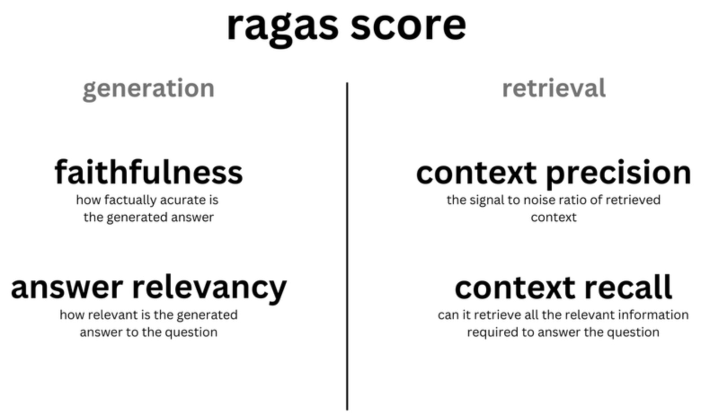
- The image below (source), shows the “triad” of metrics that can be used to evaluate RAG: Groundedness (also known as Faithfulness), Answer Relevance, and Context Relevance. Note that Context Precision and Context Recall are also important and were more recently introduced in a newer version of Ragas.
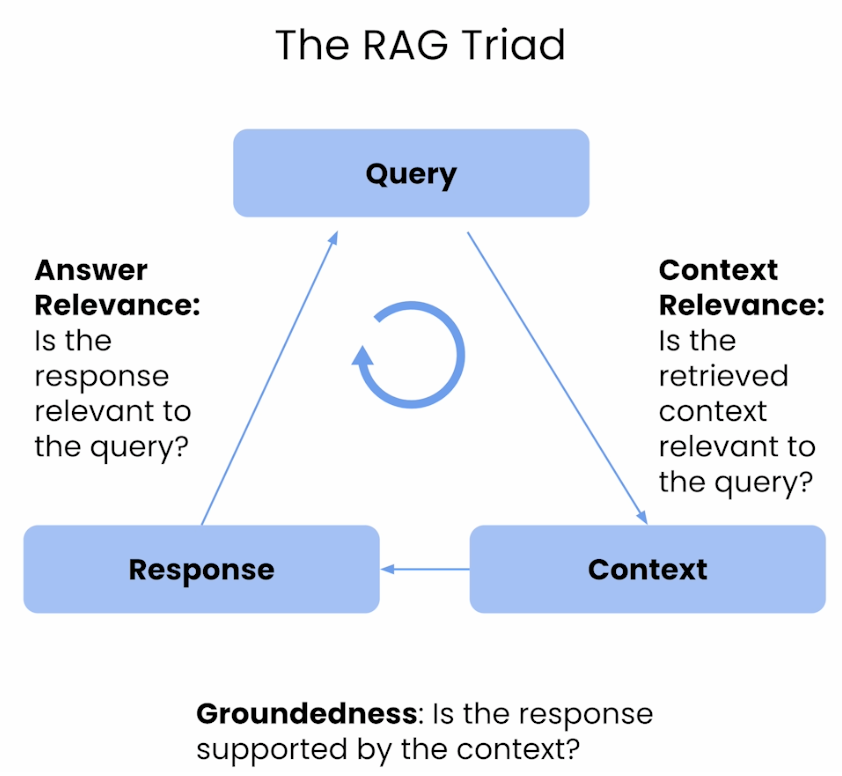
Retrieval Metrics
- Evaluating the retrieval component of RAG in the context of LLMs involves assessing how effectively the system retrieves relevant information to support the generation of accurate and contextually appropriate responses.
Context Precision
-
Definition: Context Precision is a metric used to assess the accuracy of ranking ground-truth relevant items from the context higher in the results. It measures whether all the relevant chunks of information appear at the top ranks when responding to a query. Ideally all the relevant chunks must appear at the top ranks. The metric is scored between 0 and 1 using the question, ground truth, and the contexts, with higher scores indicating better precision.
- Evaluation Approach: Context Precision is calculated using the following steps:
- For each chunk in the retrieved context, determine if it is relevant or not relevant based on the ground truth for the given question.
-
Compute Precision@k for each chunk in the context using the formula:
\[\text{Precision@k} = \frac{\text{true positives@k}}{\text{true positives@k} + \text{false positives@k}}\] -
Calculate the Context Precision@k by averaging the Precision@k values for all relevant items in the top \(K\) results:
\[\text{Context Precision@k} = \frac{\sum_{k=1}^K (\text{Precision@k} \times v_k)}{\text{Total number of relevant items in the top } K \text{ results}}\]- where \(K\) is the total number of chunks in contexts and \(v_k \in \{0,1\}\) is the relevance indicator at rank \(k\).
-
Example (source): Let’s consider an example of calculating context precision using a question and its corresponding ground truth.
- Question: Where is France and what is its capital?
- Ground Truth: France is in Western Europe, and its capital is Paris.
- High Context Precision Example:
- Contexts:
["France, in Western Europe, encompasses medieval cities, alpine villages, and Mediterranean beaches. Paris, its capital, is famed for its fashion houses, classical art museums including the Louvre and monuments like the Eiffel Tower", "The country is also renowned for its wines and sophisticated cuisine. Lascaux's ancient cave drawings, Lyon's Roman theater and the vast Palace of Versailles attest to its rich history."]
- Contexts:
- Low Context Precision Example:
- Contexts:
["The country is also renowned for its wines and sophisticated cuisine. Lascaux's ancient cave drawings, Lyon's Roman theater and", "France, in Western Europe, encompasses medieval cities, alpine villages, and Mediterranean beaches. Paris, its capital, is famed for its fashion houses, classical art museums including the Louvre and monuments like the Eiffel Tower"]
- Contexts:
- In this example, the calculation of context precision involves identifying relevant chunks related to the question and their ranking in the contexts. For the low context precision example:
- Precision@1 = \(\frac{0}{1}\) = 0
- Precision@2 = \(\frac{1}{2}\) = 0.5
- Context Precision = \(\frac{(0 + 0.5)}{1}\) = 0.5
Context Recall
-
Definition: Context Recall measures how well the retrieved context aligns with the annotated answer, treated as the ground truth. This metric is essential for assessing the accuracy of the retrieval system in identifying and ranking relevant information. It evaluate the performance of the retrieval system in identifying relevant information based on a sample query and its corresponding ground truth answer. The context recall score helps in understanding how much of the ground truth information is accurately retrieved from the context. The context recall score ranges from 0 to 1, with higher values indicating better performance.
-
Evaluation Approach: To estimate context recall, each sentence in the ground truth answer is analyzed to determine whether it can be attributed to the retrieved context. The ideal scenario is when all sentences in the ground truth answer are attributable to the retrieved context. The formula used for calculating context recall is:
\[\text{Context Recall} = \frac{\mid \text{GT sentences attributable to context} \mid}{\mid \text{Total sentences in GT} \mid}\] -
Example (source):
- Ground Truth Question: “Where is France and what is its capital?”
-
Ground Truth Answer: “France is in Western Europe and its capital is Paris.”
- High Context Recall Example:
- Retrieved Context: “France, in Western Europe, encompasses medieval cities, alpine villages, and Mediterranean beaches. Paris, its capital, is famed for its fashion houses, classical art museums including the Louvre, and monuments like the Eiffel Tower.”
- Low Context Recall Example:
- Retrieved Context: “France, in Western Europe, encompasses medieval cities, alpine villages, and Mediterranean beaches. The country is also renowned for its wines and sophisticated cuisine. Lascaux’s ancient cave drawings, Lyon’s Roman theater, and the vast Palace of Versailles attest to its rich history.”
- Calculation:
- Step 1: Break the ground truth answer into individual statements:
- Statement 1: “France is in Western Europe.”
- Statement 2: “Its capital is Paris.”
- Step 2: Verify if each ground truth statement can be attributed to the retrieved context:
- Statement 1: Yes (in both high and low context recall examples)
- Statement 2: No (in the low context recall example)
-
Step 3: Calculate context recall using the formula:
\[\text{Context Recall} = \frac{1}{2} = 0.5 \quad \text{(for the low context recall example)}\]
- Step 1: Break the ground truth answer into individual statements:
Context Relevance
- Definition:
- “Is the passage returned relevant for answering the given query?”
- Measures how well the context retrieved by the RAG system aligns with the user’s query. It specifically evaluates whether the retrieved information is relevant and appropriate for the given query, ensuring that only essential information is included to address the query effectively.
- Evaluation Approach: Involves a two-step procedure: first, the identification of relevant sentences using semantic similarity measures to produce a relevance score for each sentence. Can be measured with smaller BERT-style models, embedding distances, or with LLMs. The approach involves estimating the value of context relevance by identifying sentences within the retrieved context that are directly relevant for answering the given question. This is followed by the quantification of overall context relevance, where the final score is calculated using the formula:
- Examples:
- High context relevance example: For a question like “What is the capital of France?”, a highly relevant context would be “France, in Western Europe, encompasses medieval cities, alpine villages and Mediterranean beaches. Paris, its capital, is famed for its fashion houses, classical art museums including the Louvre and monuments like the Eiffel Tower.”
- Low context relevance example: For the same question, a less relevant context would include additional, unrelated information such as “The country is also renowned for its wines and sophisticated cuisine. Lascaux’s ancient cave drawings, Lyon’s Roman theater and the vast Palace of Versailles attest to its rich history.”
- This metric ensures that the RAG system provides concise and directly related information, enhancing the efficiency and accuracy of the response given to a specific query.
Generation Metrics
- Evaluating the generation component of RAG in the context of LLMs involves assessing the ability of the system to seamlessly integrate retrieved information into coherent, contextually relevant, and linguistically accurate responses, ensuring a harmonious blend of retrieved data and generative language skills. Put simply, these metrics collectively provide a nuanced and multidimensional approach to evaluating RAG systems, emphasizing not just the retrieval of information but its contextual relevance, factual accuracy, and semantic alignment with user queries.
Groundedness (a.k.a. Faithfulness)
- Definition: Groundedness (also known as Faithfulness) evaluates the factual consistency of a generated answer against a given context. It is measured based on the alignment between the answer and the retrieved context, with scores ranging from 0 to 1. A higher score indicates better factual consistency.
- Evaluation Approach:
- The faithfulness of a generated answer is determined by checking if all the atomic (stand-alone) claims made in the answer can be inferred from the provided context. The process involves identifying a set of atomic claims from the answer and cross-referencing each claim with the context to confirm if it can be inferred. The faithfulness score is calculated using the formula:
-
Example (source): Question: Where and when was Einstein born? Context: Albert Einstein (born 14 March 1879) was a German-born theoretical physicist, widely held to be one of the greatest and most influential scientists of all time.
- High faithfulness answer: Einstein was born in Germany on 14th March 1879.
-
Low faithfulness answer: Einstein was born in Germany on 20th March 1879.
- For the low faithfulness answer:
- Step 1: Break the generated answer into individual statements.
- Statement 1: “Einstein was born in Germany.”
- Statement 2: “Einstein was born on 20th March 1879.”
- Step 2: Verify if each statement can be inferred from the given context.
- Statement 1: Yes
- Statement 2: No
-
Step 3: Calculate the faithfulness score using the formula.
\[\text{Faithfulness} = \frac{1}{2} = 0.5\]
- Step 1: Break the generated answer into individual statements.
Answer Relevance
- Definition:
- The Answer Relevance metric evaluates how closely the generated answer aligns with the given query/prompt. This assessment focuses on the pertinence of the response, penalizing answers that are incomplete or contain redundant information. Higher scores indicate better relevance. The overarching concept behind answer relevance is that if the answer correctly addresses the question, it is likely that the original question can be accurately reconstructed from the answer alone.
- Answer relevance is reference free metric. If you’re looking to compare ground truth answer with generated answer refer to Answer Correctness.
- The image below (source) shows the output format of Answer Relevance.
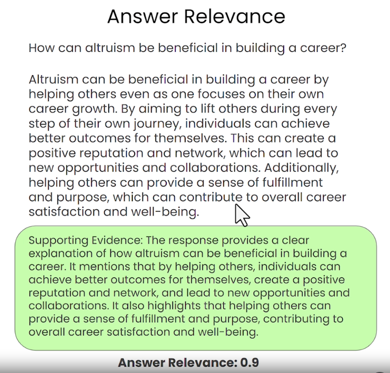
- Evaluation Approach:
- Answer Relevance is quantified by calculating the mean cosine similarity between the original question and a set of generated questions based on the provided answer. Specifically, the metric is defined as follows:
- where:
- \(E_{g_i}\) is the embedding of the generated question \(i\).
- \(E_o\) is the embedding of the original question.
- \(N\) is the number of generated questions, typically set to 3 by default.
- It is important to note that although the score generally ranges from 0 to 1, it is not strictly limited to this range due to the cosine similarity measure, which can range from -1 to 1. This metric does not rely on a reference answer and is purely focused on the relevance of the generated answer to the original question. If comparing the ground truth answer with the generated answer is required, one should refer to the “answer correctness” metric.
- An answer is considered relevant if it directly and appropriately responds to the original question. This metric does not consider the factual accuracy of the answer but rather penalizes cases where the answer is incomplete or contains unnecessary details. The process involves prompting a Large Language Model (LLM) to generate appropriate questions based on the provided answer and then measuring the mean cosine similarity between these questions and the original question. The idea is that a highly relevant answer should allow the LLM to generate questions that closely align with the original question.
- Example:
- Question: Where is France and what is its capital?
- Low relevance answer: France is in Western Europe.
- High relevance answer: France is in Western Europe and Paris is its capital.
- Calculation Steps:
- Step 1: Generate \(n\) variants of the question from the provided answer using an LLM. For example:
- Question 1: “In which part of Europe is France located?”
- Question 2: “What is the geographical location of France within Europe?”
- Question 3: “Can you identify the region of Europe where France is situated?”
- Step 2: Calculate the mean cosine similarity between these generated questions and the original question.
- Step 1: Generate \(n\) variants of the question from the provided answer using an LLM. For example:
Answer Semantic Similarity
- Category: Answer Quality and Semantic Alignment
- Requirement: Access to ground truth answers is necessary to evaluate the semantic similarity of generated responses accurately.
- Definition: Evaluates the degree of semantic similarity between the generated answer by the RAG system and the ground truth. This metric specifically assesses how closely the meaning of the generated answer mirrors that of the ground truth.
- Measurement Methods: This metric is measured using cross-encoder models designed to calculate the semantic similarity score. These models analyze the semantic content of both the generated answer and the ground truth.
-
Evaluation Approach: The approach involves comparing the generated answer with the ground truth to determine the extent of semantic overlap. The semantic similarity is quantified on a scale from 0 to 1, where higher scores indicate a greater alignment between the generated answer and the ground truth. The formula for Answer Semantic Similarity is implicitly based on the evaluation of semantic overlap rather than a direct formula.
- BERTScore:
- Uses contextual embeddings from pre-trained BERT models to match tokens in the candidate and reference text.
- Computes precision, recall, and F1 scores by aligning embeddings based on cosine similarity, capturing nuanced semantic overlap.
- MoverScore:
- Extends BERTScore by incorporating Earth Mover’s Distance (EMD) to assess the minimal semantic “effort” needed to transform one text into another.
- Leverages both contextual embeddings and IDF weighting to emphasize important content over common filler words.
- Advantages of MoverScore over BERTScore:
- Better captures the global semantic flow between texts by considering word importance and distribution, not just local alignment.
- More robust in handling paraphrased or reordered sentences, where BERTScore may undervalue semantic similarity due to token-level matching.
- Example:
- Ground truth: Albert Einstein’s theory of relativity revolutionized our understanding of the universe.
- High similarity answer: Einstein’s groundbreaking theory of relativity transformed our comprehension of the cosmos.
- Low similarity answer: Isaac Newton’s laws of motion greatly influenced classical physics.
- In this metric, a higher score reflects a better quality of the generated response in terms of its semantic closeness to the ground truth, indicating a more accurate and contextually relevant answer.
BLEU Score
- Category: N-gram Precision-Based Evaluation
- Requirement: Access to ground truth references is necessary to evaluate the BLEU score.
- Definition: BLEU (Bilingual Evaluation Understudy) is a metric that evaluates the quality of text by comparing a candidate translation to one or more reference translations. It measures the precision of n-grams in the candidate text that appear in the reference texts, with a brevity penalty to penalize overly short translations.
- Measurement Methods: BLEU calculates modified n-gram precision for n-grams up to a specified length (commonly 4). It also applies a brevity penalty to account for short candidate translations that might otherwise score artificially high.
-
Evaluation Approach: The BLEU score is computed using the formula:
\[\text{BLEU} = \text{BP} \times \exp\left( \sum_{n=1}^{N} w_n \log p_n \right)\]- where:
- \(\text{BP}\) is the brevity penalty.
- \(p_n\) is the modified n-gram precision.
- \(w_n\) is the weight for each n-gram (typically uniform).
- where:
- Example:
- Reference: The cat is on the mat.
- Candidate: The cat is on mat.
- Unigram Precision: 5 matches out of 5 words = 1.0
- Bigram Precision: 4 matches out of 4 bigrams = 1.0
- Trigram Precision: 3 matches out of 3 trigrams = 1.0
- 4-gram Precision: 2 matches out of 2 four-grams = 1.0
- Brevity Penalty: Applied due to shorter length.
- BLEU Score: Calculated by combining precisions and brevity penalty.
- In this example, despite high n-gram precision, the brevity penalty reduces the BLEU score to account for the missing word “the” before “mat.”
ROUGE Score
- Category: Recall-Oriented N-gram Evaluation
- Requirement: Access to ground truth references is necessary to evaluate the ROUGE score.
- Definition: ROUGE (Recall-Oriented Understudy for Gisting Evaluation) is a set of metrics used to evaluate automatic summarization and machine translation by comparing the overlap of n-grams between the candidate and reference texts.
- Measurement Methods: Common variants include:
- ROUGE-N: Measures overlap of n-grams.
- ROUGE-L: Measures the longest common subsequence.
- ROUGE-S: Measures skip-bigram overlap.
-
Evaluation Approach: For ROUGE-N, the recall is calculated as:
\[\text{ROUGE-N} = \frac{\text{Number of matching n-grams}}{\text{Total number of n-grams in reference}}\] - Example:
- Reference: “The cat is on the mat.”
- Candidate: “The cat is on mat.”
- ROUGE-1 (Unigram) Recall: 5 matches out of 6 unigrams = 0.833
- ROUGE-2 (Bigram) Recall: 4 matches out of 5 bigrams = 0.8
- In this example, the candidate misses the unigram “the” before “mat,” affecting the recall scores.
String Presence
- Category: Keyword or Phrase Matching
- Requirement: Access to ground truth references is necessary to evaluate string presence.
- Definition: The String Presence metric checks if the generated response contains specific reference text, such as certain keywords or phrases. It is useful in scenarios where ensuring the inclusion of particular content is essential.
- Measurement Methods: This is a binary metric that returns 1 if the reference string is present in the response and 0 otherwise.
- Evaluation Approach: The presence of the reference string is verified within the candidate response.
- Example:
- Reference: “climate change”
- Candidate: The recent study highlights the impacts of climate change on polar bears.
- String Presence Score: 1 (since “climate change” is present in the candidate).
Exact Match
- Category: Strict Matching Evaluation
- Requirement: Access to ground truth references is necessary to evaluate exact matches.
- Definition: The Exact Match metric assesses whether the generated response is identical to the reference text. It is particularly useful in scenarios requiring precise outputs, such as predefined answers or specific commands.
- Measurement Methods: This binary metric returns 1 if the candidate text matches the reference text exactly and 0 otherwise.
- Evaluation Approach: A direct comparison is made between the candidate and reference texts.
- Example:
- Reference: \(E=mc^2\)
- Candidate: \(E=mc^2\)
- Exact Match Score: 1 (since the candidate matches the reference exactly).
Context Entities Recall
-
Definition: Context Entities Recall is a metric that measures the recall of entities from the retrieved context compared to the ground truth. It calculates the fraction of entities in the ground truth that are also present in the context. This metric is crucial for scenarios where accurate entity retrieval is essential, such as tourism help desks or historical question answering.
- Evaluation Approach:
- To compute this metric, two sets are used:
- \(GE\) (Ground Truth Entities): The set of entities present in the ground truth.
- \(CE\) (Context Entities): The set of entities present in the retrieved context.
-
The Context Entities Recall is calculated using the formula:
\[\text{Context Entity Recall} = \frac{|CE \cap GE|}{|GE|}\]- where, \(\mid CE \cap GE\mid\) represents the number of entities common to both the context and the ground truth, while \(\mid GE\mid\) is the total number of entities in the ground truth.
- To compute this metric, two sets are used:
- Example (source):
-
Ground Truth: The Taj Mahal is an ivory-white marble mausoleum on the right bank of the river Yamuna in the Indian city of Agra. It was commissioned in 1631 by the Mughal emperor Shah Jahan to house the tomb of his favorite wife, Mumtaz Mahal.
-
High Entity Recall Context: The Taj Mahal is a symbol of love and architectural marvel located in Agra, India. It was built by the Mughal emperor Shah Jahan in memory of his beloved wife, Mumtaz Mahal. The structure is renowned for its intricate marble work and beautiful gardens surrounding it.
-
Low Entity Recall Context: The Taj Mahal is an iconic monument in India. It is a UNESCO World Heritage Site and attracts millions of visitors annually. The intricate carvings and stunning architecture make it a must-visit destination.
- Calculation:
- Entities in Ground Truth (GE):
['Taj Mahal', 'Yamuna', 'Agra', '1631', 'Shah Jahan', 'Mumtaz Mahal'] - Entities in High Entity Recall Context (CE1):
['Taj Mahal', 'Agra', 'Shah Jahan', 'Mumtaz Mahal', 'India'] - Entities in Low Entity Recall Context (CE2):
['Taj Mahal', 'UNESCO', 'India']
- Entities in Ground Truth (GE):
-
Context Entity Recall - 1:
\[\text{Context Entity Recall - 1} = \frac{|CE1 \cap GE|}{|GE|} = \frac{4}{6} = 0.666\] -
Context Entity Recall - 2:
\[\text{Context Entity Recall - 2} = \frac{|CE2 \cap GE|}{|GE|} = \frac{1}{6} = 0.166\] - The first context demonstrates a higher entity recall, indicating better entity coverage in comparison to the ground truth. If these contexts were generated by different retrieval mechanisms, the first mechanism would be deemed superior for applications where entity accuracy is crucial.
-
Multimodal Input Handling
- RAG traditionally focuses on textual inputs. However, real-world scenarios frequently involve multimodal inputs, particularly text combined with images. Consider queries such as “What brand are the shoes in this image?”, “Describe the issue shown in the screenshot and suggest how to fix it”, and “Provide nutritional details for the meal shown here.” Addressing these queries requires handling both text and visual elements simultaneously.
- Integrating multimodal embeddings in RAG systems enables robust and precise handling of queries containing both visual and textual elements, significantly enhancing retrieval accuracy and the overall quality of generated responses.
Flow of Multimodal Input
- Query Input:
- The user submits a query comprising text and an image. For example, a user might upload a picture of a jacket alongside the text query, “Is this jacket available in waterproof material?”
- Embedding Multimodal Input:
- Both text and image inputs need to be converted into embeddings to capture their semantic essence. This typically involves:
- Text Embedding: Utilizing models like Sentence-BERT or GPT embeddings to create dense vectors representing the semantic meaning of the textual query.
- Image Embedding: Using visual embedding models such as CLIP (Contrastive Language-Image Pre-training), ViT (Vision Transformer), or ResNet variants. These models process images to create dense vector representations capturing visual features.
- The resulting embeddings are then concatenated or fused into a single multimodal embedding vector. This fusion captures both the textual semantics and the visual features coherently.
- Both text and image inputs need to be converted into embeddings to capture their semantic essence. This typically involves:
- Storage and Retrieval from Vector Database:
- The multimodal embeddings are stored in a vector database, similar to text-only scenarios.
- During retrieval, multimodal embeddings derived from user queries are compared against the stored embeddings in the database.
- Similarity Matching via Cosine Similarity:
- Retrieval involves computing cosine similarity between the multimodal query embedding and the embeddings stored in the vector database.
- Cosine similarity effectively measures semantic and visual similarity, ensuring retrieved items closely align with both textual context and visual content of the query.
- Ranked Results and Response Generation:
- Items with the highest similarity scores – provide specific product details (e.g., material information, waterproof ratings) – are retrieved and ranked according to relevance.
- These ranked results are then fed into an LLM to synthesize contextually accurate and visually informed responses. The final response leverages the multimodal context to precisely answer queries such as material specifications or availability in different sizes or colors, with a coherent respons such ase: “Yes, this particular jacket model is made from Gore-Tex, which is fully waterproof.”
Benefits of Multimodal Embeddings in RAG
- Enhanced User Experience: Allows users to naturally query using images, which often conveys more information than text alone.
- Precision and Relevance: Combining textual semantics and visual features significantly enhances retrieval accuracy.
- Scalable Solution: Multimodal embeddings can seamlessly integrate with existing vector databases, offering scalability and performance optimization.
Multimodal RAG
- Many documents contain a mixture of content types, including text and images. Yet, information captured in images is lost in most RAG applications. With the emergence of multimodal LLMs, like GPT-4V, it is worth considering how to utilize images in RAG.
- Here are three ways to use images in RAG:
- Option 1:
- Use multimodal embeddings (such as CLIP) to embed images and text.
- Retrieve both using similarity search.
- Pass raw images and text chunks to a multimodal LLM for answer synthesis.
- Option 2:
- Use a multimodal LLM (such as GPT-4V, LLaVA, or Fuyu-8b) to produce text summaries from images.
- Embed and retrieve text.
- Pass text chunks to an LLM for answer synthesis.
- Option 3:
- Use a multimodal LLM (such as GPT-4V, LLaVA, or Fuyu-8b) to produce text summaries from images.
- Embed and retrieve image summaries with a reference to the raw image. You can use a multi-vector retriever with a Vector DB such as Chroma to store raw text and images along with their summaries for retrieval.
- Pass raw images and text chunks to a multimodal LLM for answer synthesis.
- Option 1:
- Option 2 is appropriate for cases when a multi-modal LLM cannot be used for answer synthesis (e.g., cost, etc).
- The following figure (source) offers an overview of all three aforementioned options.
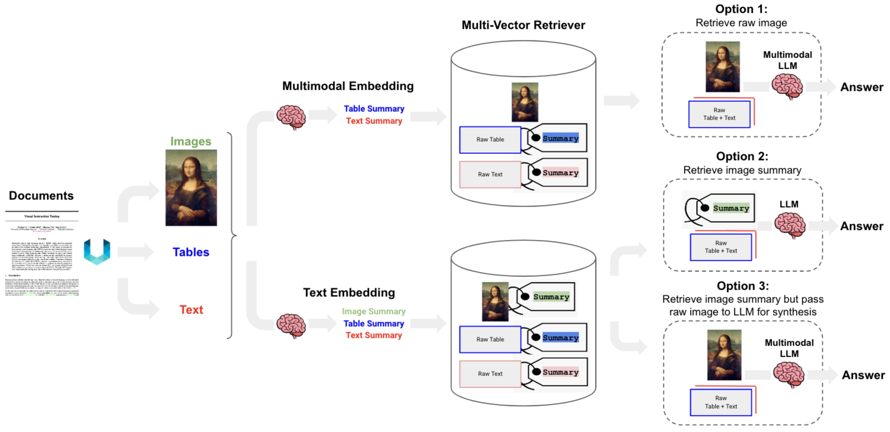
- LangChain offers cookbooks for Option 1 and Option 3.
- The following infographic (source) also offers a top-level overview of Multimodal RAG:
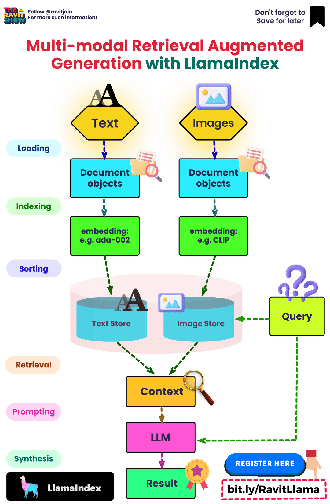
Agentic Retrieval-Augmented Generation
-
Agent-based Retrieval-Augmented Generation (RAG), or Agentic RAG, represents an advanced approach in AI that enhances the traditional RAG pipeline with intelligent agents. In conventional RAG systems, an AI model queries a knowledge base to retrieve relevant information and generate responses. However, Agentic RAG extends beyond this by employing AI agents capable of orchestrating multi-step retrieval processes, utilizing external tools, and dynamically adapting to the query. This added layer of autonomy enables advanced reasoning, decision-making, and adaptability, allowing the system to handle complex queries and diverse data sources with greater precision and responsiveness.
-
By integrating AI agents, Agentic RAG transforms traditional RAG, providing a flexible, intelligent solution for nuanced, real-world inquiries. This shift enables organizations to deploy AI systems with a higher degree of accuracy, flexibility, and intelligence, allowing them to tackle intricate tasks and deliver more precise results across a wide range of applications.
How Agentic RAG Works
-
In an agentic RAG system, AI agents play key roles in the retrieval process, using specialized tools to retrieve context-sensitive information. Unlike traditional RAG, where retrieval functions are static, agentic RAG allows dynamic selection and operation of tools based on query requirements. Retrieval agents may utilize tools such as:
- Vector Search Engines: Retrieve information from vectorized data in databases.
- Web Search Tools: Access live web data for up-to-date, contextually relevant information.
- Calculators: Perform computations for queries that require accurate calculation.
- APIs for Software Programs: Programmatically retrieve information from applications like email or chat programs to access user-specific data.
-
In the context of Agentic RAG, the retrieval process is “agentic,” meaning agents are capable of reasoning and decision-making regarding which sources and tools to use, based on the specific requirements of the query. This flexibility elevates their tool usage beyond simple retrieval, allowing for a more dynamic and adaptive response.
Agentic Decision-Making in Retrieval
-
The decision-making process of retrieval agents encompasses several key actions, including:
- Deciding Whether to Retrieve: Assessing if additional information is necessary for the query.
- Choosing the Appropriate Tool: Selecting the most suitable tool (e.g., a vector search engine or web search) based on the query.
- Query Formulation: Refining or rephrasing the query to enhance retrieval accuracy.
- Evaluating Retrieved Results: Reviewing the retrieved information to determine sufficiency, and whether further retrieval is needed.
Agentic RAG Architectures: Single-Agent vs. Multi-Agent Systems
- Agentic RAG can be implemented with a single agent or multiple agents, each offering unique strengths.
Single-Agent RAG (Router)
- The simplest implementation of agentic RAG involves a single agent functioning as a “router.” This agent determines the appropriate source or tool for retrieving information based on the query. The single agent toggles between different options, such as a vector database, web search, or an API. This setup provides a versatile retrieval process, enabling access to multiple data sources beyond a single vector search tool.
- As shown in the figure below (source), the single-agent RAG system (router) architecture involves a single agent serving as a “router,” dynamically selecting the best tool or source based on the query, enabling efficient information retrieval across multiple data channels.
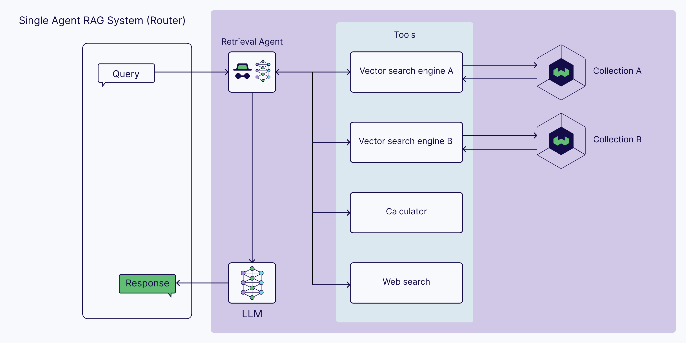
Multi-Agent RAG Systems
-
For more complex queries, multi-agent RAG systems provide additional flexibility. These systems feature a “master agent” that coordinates several specialized retrieval agents, such as:
- Internal Data Retrieval Agent: Retrieves information from proprietary, internal databases.
- Personal Data Retrieval Agent: Accesses user-specific information, such as emails or chat history.
- Public Data Retrieval Agent: Conducts web searches for up-to-date public information.
-
By utilizing multiple agents tailored to specific sources or tasks, multi-agent RAG systems can deliver comprehensive, accurate responses across diverse channels.
-
As shown in the figure below (source), the multi-agent RAG system architecture utilizes multiple specialized retrieval agents to access different sources and tools, offering a flexible and comprehensive approach to complex queries.
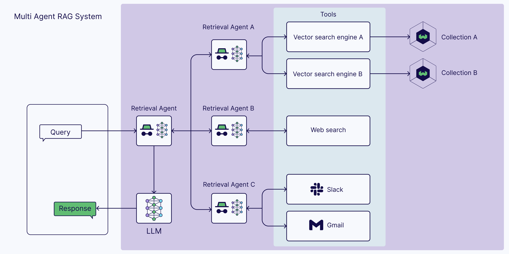
Beyond Retrieval: Expanding Agentic RAG’s Capabilities
-
Agentic RAG systems can incorporate agents for tasks beyond retrieval, including:
- Validating Information: Cross-referencing data across sources to ensure accuracy.
- Performing Multi-step Reasoning: Following logical steps to address complex queries before generating responses.
- Updating System Memory: Tracking and retaining user-specific preferences or past queries, enabling personalized and context-aware responses.
-
By expanding its capabilities beyond simple retrieval, Agentic RAG delivers a powerful, context-sensitive AI solution capable of handling intricate, real-world applications.
Agentic RAG vs. Vanilla RAG: Key Differences
- While both vanilla and agentic RAG systems aim to retrieve information and generate responses, agentic RAG introduces several significant enhancements:
| Feature | Vanilla RAG | Agentic RAG |
|---|---|---|
| Access to External Tools | No | Yes – Utilizes external tools like vector search engines, web search tools, calculators, and APIs. |
| Query Pre-processing | No | Yes – Agents dynamically refine, rephrase, and adapt queries for optimized retrieval. |
| Decision-making in Retrieval | Limited to direct retrieval from knowledge base | Agents autonomously decide if retrieval is needed, select tools, and adapt based on query complexity and source type. |
| Multi-step Retrieval Process | No | Yes – Agents perform multi-step, adaptive retrieval processes involving various sources or tool combinations. |
| Data Validation | No | Yes – Information is cross-referenced across sources to validate accuracy, supporting complex, real-world responses. |
| Dynamic Tool Selection | Static retrieval tools only | Dynamic – Agents choose specific tools (e.g., vector search, APIs) based on query needs. |
| Adaptability to Query | Limited | Highly adaptive – Agents select and operate tools based on real-time assessment of query requirements. |
| Types of Agents | Not applicable | Multiple specialized agents, such as internal data retrieval, personal data retrieval, public data retrieval. |
| Single-Agent vs. Multi-Agent System | Not applicable | Single-agent router or multi-agent systems, with “master” and specialized agents for complex queries. |
| Reasoning and Logic Capability | No | Yes – Supports multi-step reasoning, allowing logical sequence handling before generating responses. |
| Memory and Personalization | Limited to immediate query | Yes – Capable of updating memory to retain user preferences or history, allowing personalized responses. |
| Real-world Applications | Primarily static responses from a fixed database | Supports a wide range of real-world applications by responding to complex, nuanced inquiries with context sensitivity. |
- Drawing a parallel with problem-solving, agentic RAG offers capabilities akin to having a smartphone in hand—equipped with multiple apps and tools to help answer a question—whereas vanilla RAG is akin to being in a library with limited resources.
Implementing Agentic RAG: Key Approaches
- To implement agentic RAG, developers can use either language models with function calling or agent frameworks, each providing specific advantages in terms of flexibility and control.
- Both methods—function calling in language models and agent frameworks—enable agentic RAG, though each has unique benefits:
- Function Calling provides control over each tool interaction, suitable for cases with specific tool chains or simple agent setups.
- Agent Frameworks offer pre-built integrations and routing logic, ideal for larger, multi-agent architectures.
- Using these implementations, developers can build flexible and adaptive agentic RAG pipelines, enhancing retrieval, reasoning, and response generation capabilities for AI-driven applications.
Language Models with Function Calling
- Function calling allows language models to interact directly with external tools. For example, OpenAI’s function calling for GPT-4 or Cohere’s connectors API lets developers connect language models to databases, calculators, and other services. This interaction involves defining a function (such as querying a database), passing it to the model via a schema, and routing the model’s queries through the defined functions. This approach enables the model to leverage specific tools as needed, based on the query.
Agent Frameworks
- Several agent frameworks—such as LangChain, LlamaIndex, CrewAI—simplify agentic RAG implementation by providing pre-built templates and tool integrations. Key features include:
- LangChain: Offers support for language model tools, and its LCEL and LangGraph frameworks integrate these tools seamlessly.
- LlamaIndex: Provides a QueryEngineTool to streamline retrieval tasks.
- CrewAI: A leading framework for multi-agent setups, which supports shared tool access among agents.
Enterprise-driven Adoption
- Organizations are increasingly transitioning to agentic RAG to gain more autonomous and accurate AI-driven systems. Enterprises such as Microsoft and Replit have introduced agents to enhance task completion and software development assistance. With agentic RAG, companies can build AI applications capable of handling diverse, real-time data sources, providing robust and adaptable responses for complex queries and tasks.
Benefits
- The primary benefits of agentic RAG include:
- Enhanced Retrieval Accuracy: By routing queries through specialized agents, agentic RAG can provide more accurate responses.
- Autonomous Task Performance: Agents can perform multi-step reasoning, independently solving complex problems.
- Improved Collaboration: These systems can better assist users by handling more varied and personalized queries.
Limitations
- Agentic RAG does present challenges, such as:
- Increased Latency: Running multiple agents and interacting with tools can add delays to the response.
- Reliability of Agents: Depending on the LLM’s reasoning capabilities, agents may fail to complete certain tasks accurately.
- Complexity in Error Handling: Systems need robust fallback mechanisms to recover if an agent fails to retrieve or process data.
Code
- Implementing agentic RAG requires setting up an agent framework capable of handling tool integrations and coordinating retrieval processes. This section walks through an example code setup, demonstrating both language models with function calling and agent frameworks for building an agentic RAG pipeline.
Implementing Agentic RAG with Function Calling
-
Function calling in language models allows them to interact with tools by defining functions that retrieve data from external sources. This method leverages API calls, database queries, and computation tools to enrich the response with dynamic data.
-
Here’s an example implementation using a function for retrieval from a database via the Weaviate vector search API.
Define the Function for Retrieval
- To start, we define a function that uses Weaviate’s hybrid search to query a database and retrieve relevant results.
def get_search_results(query: str) -> str:
"""Sends a query to Weaviate's Hybrid Search. Parses the response into a formatted string."""
response = blogs.query.hybrid(query, limit=5) # Retrieve top 5 results based on the query
stringified_response = ""
for idx, o in enumerate(response.objects):
stringified_response += f"Search Result {idx+1}:\n"
for prop in o.properties:
stringified_response += f"{prop}: {o.properties[prop]}\n"
stringified_response += "\n"
return stringified_response
Define the Tools Schema
- Next, we define a tools schema that connects the function to the language model. This schema tells the model how to use the function for retrieving data.
tools_schema = [{
'type': 'function',
'function': {
'name': 'get_search_results',
'description': 'Get search results for a provided query.',
'parameters': {
'type': 'object',
'properties': {
'query': {
'type': 'string',
'description': 'The search query.',
},
},
'required': ['query'],
},
},
}]
Setting Up the Interaction Loop
- To ensure the model can call the tool multiple times (if needed), we set up a loop that enables the model to interact with tools and retrieve data iteratively until it has all necessary information.
def ollama_generation_with_tools(user_message: str, tools_schema: list, tool_mapping: dict, model_name: str = "llama3.1") -> str:
messages = [{"role": "user", "content": user_message}]
response = ollama.chat(model=model_name, messages=messages, tools=tools_schema)
# Check if the model needs to use a tool
if not response["message"].get("tool_calls"):
return response["message"]["content"]
# Handle tool calls and retrieve information
for tool in response["message"]["tool_calls"]:
function_to_call = tool_mapping[tool["function"]["name"]]
function_response = function_to_call(tool["function"]["arguments"]["query"])
messages.append({"role": "tool", "content": function_response})
# Generate final response after tool calls
final_response = ollama.chat(model=model_name, messages=messages)
return final_response["message"]["content"]
Executing the Agentic RAG Query
- Finally, we run the function, allowing the language model to interact with the
get_search_resultstool.
tool_mapping = {"get_search_results": get_search_results} # Maps tool name to function
response = ollama_generation_with_tools(
"How is HNSW different from DiskANN?",
tools_schema=tools_schema,
tool_mapping=tool_mapping
)
print(response)
- This setup enables the language model to retrieve dynamic information and perform tool-based retrievals as needed.
Implementing Agentic RAG with Agent Frameworks
- Using agent frameworks streamlines the implementation process by providing templates and pre-built modules for multi-agent orchestration. Here’s how to set up an agentic RAG pipeline using LangChain as an example.
Step 1: Define Agents and Tools
- LangChain simplifies agentic RAG by managing tools and routing tasks. First, define the agents and register the tools they will use.
from langchain.tools import WebSearchTool, DatabaseTool, CalculatorTool
from langchain.agents import Agent
# Define tools for retrieval
web_search_tool = WebSearchTool(api_key="YOUR_WEB_SEARCH_API_KEY")
database_tool = DatabaseTool(db_client="your_database_client")
calculator_tool = CalculatorTool()
# Set up an agent with a routing function
retrieval_agent = Agent(
tools=[web_search_tool, database_tool, calculator_tool],
routing_function="retrieve_and_select_tool"
)
Step 2: Configure Agent Routing
- Set up the routing function to let the agent decide which tool to use based on the input query.
def retrieve_and_select_tool(query):
if "calculate" in query:
return calculator_tool
elif "web" in query:
return web_search_tool
else:
return database_tool
Step 3: Chain Agents for Multi-Agent RAG
- In multi-agent RAG, you might have a “master agent” that routes queries to specialized agents based on query type. Here’s how to set up a master agent to coordinate multiple agents.
from langchain.agents import MultiAgent
# Define specialized agents
internal_agent = Agent(tools=[database_tool], routing_function="database_retrieval")
public_agent = Agent(tools=[web_search_tool], routing_function="web_retrieval")
# Create a master agent to coordinate retrieval
master_agent = MultiAgent(agents=[internal_agent, public_agent])
# Function to handle a query using master agent
def handle_query_with_master_agent(query):
return master_agent.handle_query(query)
Running the Multi-Agent Query
- Finally, to test the system, input a query and let the master agent route it appropriately:
response = handle_query_with_master_agent("Find recent studies on neural networks")
print(response)
Disadvantages of Agentic RAG
-
Despite its advantages, agentic RAG comes with several limitations that should be carefully considered, particularly for time-sensitive applications:
-
Increased Latency: The inherent complexity of agentic RAG often translates to longer response times. Each query may require multiple tool interactions and sequential retrieval steps, which increase the latency significantly. This can hinder the system’s usability in environments where quick responses are crucial, such as real-time support systems or conversational interfaces.
-
Higher Computational Cost: Agentic RAG systems often involve multiple calls to LLMs and other external tools. These calls cumulatively drive up computational costs, making it less efficient and potentially prohibitive for high-traffic applications. This expense adds to operational concerns, especially if the system must process large volumes of queries.
-
Production Feasibility: Due to the latency and cost concerns, agentic RAG may not be ideal for production applications requiring rapid and continuous output. In such cases, vanilla RAG, which offers more direct and faster response generation, might be more suitable.
-
-
While these drawbacks limit agentic RAG’s use in certain scenarios, its capability to generate high-quality, well-researched responses can make it worthwhile in contexts where response time is less critical and information accuracy is paramount.
Summary
- Agentic RAG refers to an agent-based implementation of RAG. AI agents are entities tasked with accomplishing specific objectives. These agents are often equipped with memory and tools, which they can utilize to carry out their tasks effectively. Among these tools, one significant capability is the ability to retrieve information from various sources, such as web searches or internal documents.
- In the context of agentic RAG, the “retrieval becomes agentic.” This implies that the AI agent is capable of reasoning and making decisions regarding which sources are most appropriate for retrieving the required information. The agent’s tool usage evolves beyond simple information retrieval, becoming more flexible and dynamic.
- The distinction between standard and agentic RAG can be summarized as follows:
- Common RAG: The user input prompts a single call to a database, retrieving additional information in response to the query.
- Agentic RAG: The agent is able to deliberate on which source is the most suitable for retrieving information based on the query, providing a more sophisticated and adaptable approach.
- The following figure (source) offers a visual summary of Agentic RAG:
RAG vs. Long Context Windows
Computational Cost
- Processing extremely long contexts incurs substantial computational overhead. For instance, utilizing a 10 million token context window with state-of-the-art models like Llama 4 demands considerable hardware resources—approximately 32 H100 GPUs—which translates to over $100 per hour in inference costs. The key-value (KV) cache alone can exceed 1 terabyte of VRAM. These requirements pose a significant barrier to the practical deployment of long-context inference systems at scale, especially for organizations with limited infrastructure budgets.
Inference Latency and Throughput
- As the number of tokens increases, the latency of inference rises proportionally, often leading to a considerable decline in throughput. Even when hardware resources are available, this degradation in response time can negatively impact user experience in latency-sensitive applications such as virtual assistants, search engines, or real-time analytics systems.
Contextual Comprehension and Model Training Limitations
- Although large context windows are theoretically capable of accommodating vast amounts of input data, current LLMs are typically trained on much smaller maximum context lengths—commonly up to 128,000 tokens. Consequently, performance across the full extent of a 10 million token context window is unproven and likely suboptimal. Empirical studies suggest that retrieval accuracy tends to diminish for information placed in the middle of a long context due to a phenomenon informally referred to as the “Lost in the Middle” effect. Therefore, while long-context architectures offer the promise of expanded capacity, their practical utility is constrained by training regimes and architectural bottlenecks.
RAG as a Targeted, Cost-Efficient Solution
- In contrast, RAG provides a principled and efficient mechanism for narrowing down relevant content from a large corpus before conditioning the model’s generative process. By introducing a retrieval stage that identifies and ranks the most pertinent information, RAG minimizes unnecessary context, optimizes for response accuracy, and reduces memory and compute demands. This retrieval-first approach allows RAG systems to operate effectively within the token limitations of current LLMs, while maintaining scalability and affordability.
Improving RAG Systems
- To enhance and refine RAG systems, consider the following three structured methods, each accompanied by comprehensive guides and practical implementations:
- Re-ranking Retrieved Results: A fundamental and effective method involves employing a Re-ranking Model to refine the results obtained through initial retrieval. This approach prioritizes more relevant results, thereby improving the overall quality of the generated content. MonoT5, MonoBERT, DuoBERT, etc. are examples of deep models that can be used as re-rankers. For a detailed exploration of this technique, refer to the guide and code example provided by Mahesh Deshwal. A detailed discourse on re-ranking is available in the Re-ranking section.
- FLARE Technique: Subsequent to re-ranking, one should explore the FLARE methodology. This technique dynamically queries the internet (could also be a local knowledge base) whenever the confidence level of a segment of the generated content falls below a specified threshold. This overcomes a significant limitation of conventional RAG systems, which typically query the knowledge base only at the outset and subsequently produce the final output. Akash Desai’s guide and code walkthrough offer an insightful understanding and practical application of this technique. More on the FLARE technique in the Active Retrieval Augmented Generation section.
- HyDE Approach: Finally, the HyDE technique introduces an innovative concept of generating a hypothetical document in response to a query. This document is then converted into an embedding vector. The uniqueness of this method lies in using the vector to identify a similar neighborhood within the corpus embedding space, thereby retrieving analogous real documents based on vector similarity. To delve into this method, refer to Akash Desai’s guide and code implementation. More on the HyDE technique in the Precise Zero-Shot Dense Retrieval Without Relevance Labels section.
- Each of these methods offers a unique approach to refining RAG systems, contributing to more accurate and contextually relevant results.
RAG 2.0
- RAG 2.0, unveiled by Contextual AI, represents a significant advancement in robust AI systems for enterprise use, optimizing the entire system end-to-end unlike its predecessor. This new generation introduces Contextual Language Models (CLMs) which not only surpass the original RAG benchmarks but also outperform the strongest available models based on GPT-4, across various industry benchmarks, demonstrating superior performance in open domain question-answering and specialized tasks like truth verification.
- The introduction of RAG 2.0 marks a departure from the use of off-the-shelf models and disjointed components, which characterized previous systems as brittle and suboptimal for production environments. Instead, RAG 2.0 end-to-end optimizes the language model and retriever as a single system.
- Key improvements are evident in real-world applications where RAG 2.0 CLMs have been deployed. Using Google Cloud’s latest ML infrastructure, these models have shown significant accuracy enhancements, particularly in sectors like finance and law, highlighting their potential in specialized domains.
- Further comparisons reveal that RAG 2.0 significantly outperforms traditional long-context models, providing higher accuracy with less computational demand. This makes RAG 2.0 particularly appealing for scaling in production environments.
- Overall, RAG 2.0’s innovative approach not only pushes the boundaries of generative AI in production settings but also demonstrates its superiority through extensive benchmarks and real-world deployments, inviting enterprises to join in its ongoing development and application.
Selected Papers
Retrieval-Augmented Generation for Knowledge-Intensive NLP Tasks
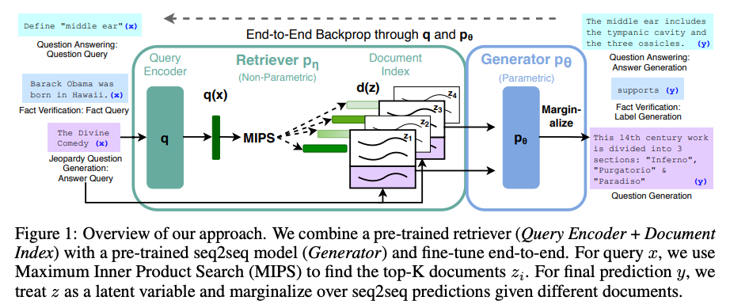
- The paper by Lewis et al. from Facebook AI Research, University College London, and New York University, introduces Retrieval-Augmented Generation (RAG) models combining pre-trained parametric and non-parametric memory for language generation tasks.
- Addressing limitations of large pre-trained language models, such as difficulty in accessing and precisely manipulating knowledge, RAG models merge a pre-trained sequence-to-sequence (seq2seq) model with a dense vector index of Wikipedia, accessed by a neural retriever.
- The RAG framework encompasses two models: RAG-Sequence, using the same retrieved document for the entire sequence, and RAG-Token, allowing different passages for each token.
- The retrieval component, Dense Passage Retriever (DPR), uses a bi-encoder architecture with BERT-based document and query encoders. The generator component utilizes BART-large, a pre-trained seq2seq transformer with 400M parameters.
- RAG models were trained jointly on the retriever and generator components without direct supervision on which documents to retrieve, using stochastic gradient descent with Adam. The training used a Wikipedia dump as the non-parametric knowledge source, split into 21M 100-word chunks.
- A summary of the methods and models used for query/document embedding and retrieval, as well as the end-to-end structure of the RAG framework is as below:
- Query/Document Embedding:
- The retrieval component, Dense Passage Retriever (DPR), follows a bi-encoder architecture.
- DPR uses BERTBASE as the foundation for both document and query encoders.
- For a document \(z\), a dense representation \(d(z)\) is produced by a document encoder, \(BERT_d\).
- For a query \(x\), a query representation \(q(x)\) is produced by a query encoder, \(BERT_q\).
- The embeddings are created such that relevant documents for a given query are close in the embedding space, allowing effective retrieval.
- Retrieval Process:
- The retrieval process involves calculating the top-\(k\) documents with the highest prior probability, which is essentially a Maximum Inner Product Search (MIPS) problem.
- The MIPS problem is solved approximately in sub-linear time to efficiently retrieve relevant documents.
- End-to-End Structure:
- The RAG model uses the input sequence \(x\) to retrieve text documents \(z\), which are then used as additional context for generating the target sequence \(y\).
- The generator component is modeled using BART-large, a pre-trained seq2seq transformer with 400M parameters. BART-large combines the input \(x\)with the retrieved content \(z\) for generation.
- The RAG-Sequence model uses the same retrieved document for generating the complete sequence, while the RAG-Token model can use different passages per token.
- The training process involves jointly training the retriever and generator components without direct supervision on what document should be retrieved. The training minimizes the negative marginal log-likelihood of each target using stochastic gradient descent with Adam.
- Notably, the document encoder BERTd is kept fixed during training, avoiding the need for periodic updates of the document index.
- Query/Document Embedding:
- The following figure from the paper illustrates an overview of the proposed approach. They combine a pre-trained retriever (Query Encoder + Document Index) with a pre-trained seq2seq model (Generator) and fine-tune end-to-end. For query \(x\), they use Maximum Inner Product Search (MIPS) to find the top-\(K\) documents \(z_i\). For final prediction \(y\), they treat \(z\) as a latent variable and marginalize over seq2seq predictions given different documents.

- In open-domain QA tasks, RAG established new state-of-the-art results, outperforming both parametric seq2seq models and task-specific retrieve-and-extract architectures. RAG models showed the ability to generate correct answers even when the right answer wasn’t in any retrieved document.
- RAG-Sequence surpassed BART in Open MS-MARCO NLG, indicating less hallucination and more factually correct text generation. RAG-Token outperformed RAG-Sequence in Jeopardy question generation, demonstrating higher factuality and specificity.
- On the FEVER fact verification task, RAG models achieved results close to state-of-the-art models that require more complex architectures and intermediate retrieval supervision.
- This study showcases the effectiveness of hybrid generation models, combining parametric and non-parametric memories, offering new directions in combining these components for a range of NLP tasks.
- Code; interactive demo.
Active Retrieval Augmented Generation
- Despite the remarkable ability of large language models (LLMs) to comprehend and generate language, they have a tendency to hallucinate and create factually inaccurate output.
- Augmenting LLMs by retrieving information from external knowledge resources is one promising solution. Most existing retrieval-augmented LLMs employ a retrieve-and-generate setup that only retrieves information once based on the input. This is limiting, however, in more general scenarios involving generation of long texts, where continually gathering information throughout the generation process is essential. There have been some past efforts to retrieve information multiple times while generating outputs, which mostly retrieve documents at fixed intervals using the previous context as queries.
- This paper from Jiang et al. at CMU, Sea AI Lab, and Meta AI in EMNLP 2023 presents Forward-Looking Active REtrieval augmented generation (FLARE), a method addressing the tendency of large language models (LLMs) to produce factually inaccurate content.
- FLARE iteratively uses predictions of upcoming sentences to actively decide when and what to retrieve across the generation process, enhancing LLMs with dynamic, multi-stage external information retrieval.
- Unlike traditional retrieve-and-generate models that use fixed intervals or input-based retrieval, FLARE targets continual information gathering for long text generation, reducing hallucinations and factual inaccuracies.
- The system triggers retrieval when generating low-confidence tokens, determined by a probability threshold. This anticipates future content, forming queries to retrieve relevant documents for regeneration.
- The following figure from the paper illustrates FLARE. Starting with the user input \(x\) and initial retrieval results \(D_x\), FLARE iteratively generates a temporary next sentence (shown in gray italic) and check whether it contains low-probability tokens (indicated with underline). If so (step 2 and 3), the system retrieves relevant documents and regenerates the sentence.
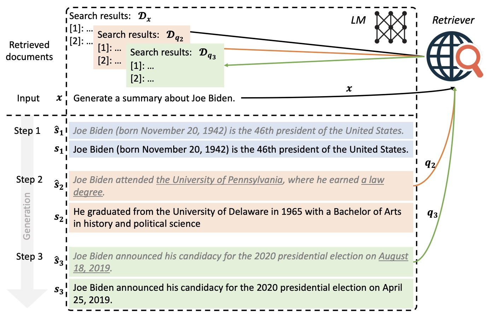
- FLARE was tested on four long-form, knowledge-intensive generation tasks/datasets, exhibiting superior or competitive performance, demonstrating its effectiveness in addressing the limitations of existing retrieval-augmented LLMs.
- The model is adaptable to existing LLMs, as shown with its implementation on GPT-3.5, and employs off-the-shelf retrievers and the Bing search engine.
- Code.
MuRAG: Multimodal Retrieval-Augmented Generator
- This paper by Chen et al. from Google Research proposes Multimodal Retrieval-Augmented Transformer (MuRAG), which looks to extend the retrieval process beyond text to include other modalities like images or structured data, which can then be used alongside textual information to inform the generation process.
- MuRAG’s magic lies in its two-phase training approach: pre-training and fine-tuning, each carefully crafted to build the model’s ability to tap into a vast expanse of multimodal knowledge.
- The key goal of MuRAG is to incorporate both visual and textual knowledge into language models to improve their capability for multimodal question answering.
- MuRAG is distinct in its ability to access an external non-parametric multimodal memory (images and texts) to enhance language generation, addressing the limitations of text-only retrieval in previous models.
- MuRAG has a dual-encoder architecture combines pre-trained visual transformer (ViT) and a text encoder (T5) models to create a backbone encoder, enabling the encoding of image-text pairs, image-only, and text-only inputs into a unified/joint multimodal representation.
- MuRAG is pre-trained on a mixture of image-text data (LAION, Conceptual Captions) and text-only data (PAQ, VQA). It uses a contrastive loss for retrieving relevant knowledge and a generation loss for answer prediction. It employs a two-stage training pipeline: initial training with small in-batch memory followed by training with a large global memory.
- During the retriever stage, MuRAG takes a query \(q\) of any modality as input and retrieves from a memory \(\mathcal{M}\) of image-text pairs. Specifically, we apply the backbone encoder \(f_\theta\) to encode a query \(q\), and use maximum inner product search (MIPS) over all of the memory candidates \(m \in \mathcal{M}\) to find the top-\(k\) nearest neighbors \(\operatorname{Top}_K(\mathcal{M} \mid q)=\left[m_1, \cdots, m_k\right]\). Formally, we define \(\operatorname{Top}_K(\mathcal{M} \mid q)\) as follows:
-
During the reader stage, the retrievals (the raw image patches) are combined with the query \(q\) as an augmented input \(\left[m_1, \cdots, m_k, q\right]\), which is fed to the backbone encoder \(f_\theta\) to produce retrievalaugmented encoding. The decoder model \(g_\theta\) uses attention over this representation to generate textual outputs \(\mathbf{y}=y_1, \cdots, y_n\) token by token.
\[p\left(y_i \mid y_{i-1}\right)=g_\theta\left(y_i \mid f_\theta\left(\operatorname{Top}_K(\mathcal{M} \mid q) ; q\right) ; y_{1: i-1}\right)\]- where \(y\) is decoded from a given vocabulary \(\mathcal{V}\).
-
The figure below from the original paper (source) shows how the model taps into an external repository to retrieve a diverse range of knowledge encapsulated within both images and textual fragments. This multimodal information is then employed to enhance the generative process. The upper section outlines the setup for the pre-training phase, whereas the lower section specifies the framework for the fine-tuning phase.
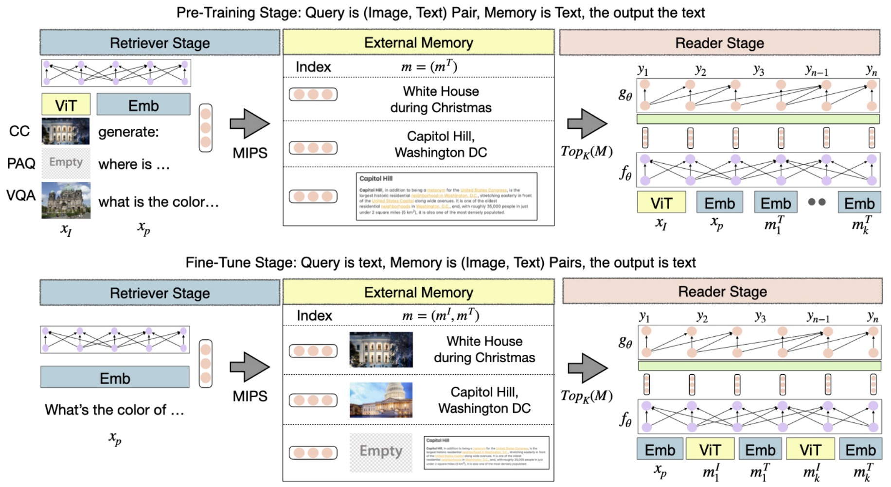
- The process can be summarized as follows:
- For retrieval, MuRAG uses maximum inner product search to find the top-\(k\) most relevant image-text pairs from the memory given a question. The “memory” here refers to the external knowledge base that the model can retrieve information from. Specifically, the memory contains a large collection of image-text pairs that are encoded offline by the backbone encoder prior to training.
- During training and inference, given a question, MuRAG’s retriever module will search through this memory to find the most relevant image-text pairs using maximum inner product search.
- The memory serves as the knowledge source and can contain various types of multimodal data like images with captions, passages of text, tables, etc. that are related to the downstream task.
- For example, when fine-tuning on the WebQA dataset, the memory contains 1.1 million image-text pairs extracted from Wikipedia that the model can retrieve from to answer questions.
- So in summary, the memory is the large non-parametric external knowledge base encoded in a multimodal space that MuRAG learns to retrieve relevant knowledge from given a question, in order to augment its language generation capabilities. The memory provides the world knowledge to complement what is stored implicitly in the model’s parameters.
- For reading, the retrieved multimodal context is combined with the question embedding and fed into the decoder to generate an answer.
- MuRAG achieves state-of-the-art results on two multimodal QA datasets - WebQA and MultimodalQA, outperforming text-only methods by 10-20% accuracy. It demonstrates the value of incorporating both visual and textual knowledge.
- Key limitations are the reliance on large-scale pre-training data, computational costs, and issues in visual reasoning like counting objects. But overall, MuRAG represents an important advance in building visually-grounded language models.
Hypothetical Document Embeddings (HyDE)
- Published in Precise Zero-Shot Dense Retrieval without Relevance Labels by Gao et al. from CMU and University of Waterloo, proposes an innovative approach called Hypothetical Document Embeddings (HyDE) for effective zero-shot dense retrieval in the absence of relevance labels. HyDE leverages an instruction-following language model, such as InstructGPT, to generate a hypothetical document that captures relevance patterns, although it may contain factual inaccuracies. An unsupervised contrastive encoder, like Contriever, then encodes this document into an embedding vector to identify similar real documents in the corpus embedding space, effectively filtering out incorrect details.
- The implementation of HyDE combines InstructGPT (a GPT-3 model) and Contriever models, utilizing OpenAI playground’s default temperature setting for generation. For English retrieval tasks, the English-only Contriever model was used, while for non-English tasks, the multilingual mContriever was employed.
- The following image from the paper illustrates the HyDE model. Documents snippets are shown. HyDE serves all types of queries without changing the underlying GPT-3 and Contriever/mContriever models.

- Experiments were conducted using the Pyserini toolkit. The results demonstrate HyDE’s significant improvement over the state-of-the-art unsupervised dense retriever Contriever, with strong performance comparable to fine-tuned retrievers across various tasks and languages. Specifically, in web search and low-resource tasks, HyDE showed sizable improvements in precision and recall-oriented metrics. It remained competitive even compared to fine-tuned models, particularly in terms of recall. In multilingual retrieval, HyDE improved the mContriever model and outperformed non-Contriever models fine-tuned on MS-MARCO. However, there were some performance gaps with fine-tuned mContrieverFT, likely due to under-training in non-English languages.
- Further analysis explored the effects of using different generative models and fine-tuned encoders with HyDE. Larger language models brought greater improvements, and the use of fine-tuned encoders with HyDE showed that less powerful instruction language models could impact the performance of the fine-tuned retriever.
- One possible pitfall of HyDE is that it can potentially “hallucinate” in the sense that it generates hypothetical documents that may contain invented or inaccurate details. This phenomenon occurs because HyDE uses an instruction-following language model, like InstructGPT, to generate a document based on a query. The generated document is intended to capture the relevance patterns of the query, but since it’s created without direct reference to real-world data, it can include false or fictional information. This aspect of HyDE is a trade-off for its ability to operate in zero-shot retrieval scenarios, where it creates a contextually relevant but not necessarily factually accurate document to guide the retrieval process.
- In conclusion, the paper introduces a new paradigm of interaction between language models and dense encoders/retrievers, showing that relevance modeling and instruction understanding can be effectively handled by a powerful and flexible language model. This approach eliminates the need for relevance labels, offering practical utility in the initial stages of a search system’s life, and paving the way for further advancements in tasks like multi-hop retrieval/QA and conversational search.
RAGAS: Automated Evaluation of Retrieval Augmented Generation
- This paper by Es et al. from Exploding Gradients, Cardiff University, and AMPLYFI introduces RAGAS, a framework for reference-free evaluation of Retrieval Augmented Generation (RAG) systems.
- RAGAS focuses on evaluating the performance of RAG systems in dimensions such as the effectiveness of the retrieval system in providing relevant context, the LLM’s ability to utilize this context, and the overall quality of generation.
- The framework proposes a suite of metrics to evaluate these dimensions without relying on ground truth human annotations.
- RAGAS focuses on three quality aspects: Faithfulness, Answer Relevance, and Context Relevance.
- Faithfulness: Defined as the extent to which the generated answer is grounded in the provided context. It’s measured using the formula: \(F = \frac{|V|}{|S|}\) where, \(|V|\) is the number of statements supported by the context and \(|S|\) is the total number of statements extracted from the answer.
- Answer Relevance: This metric assesses how well the answer addresses the given question. It’s calculated by generating potential questions from the answer and measuring their similarity to the original question using the formula: \(AR = \frac{1}{n} \sum_{i=1}^{n} \text{sim}(q, q_i)\) where \(q\) is the original question, \(q_i\) are the generated questions, and sim denotes the cosine similarity between their embeddings.
- Context Relevance: Measures the extent to which the retrieved context contains only the information necessary to answer the question. It is quantified using the proportion of extracted relevant sentences to the total sentences in the context: \(CR = \frac{\text{number of extracted sentences}}{\text{total number of sentences in } c(q)}\)
- The paper validates RAGAS using the WikiEval dataset, demonstrating its alignment with human judgments in evaluating these aspects.
- The authors argue that RAGAS contributes to faster and more efficient evaluation cycles for RAG systems, which is vital due to the rapid adoption of LLMs.
- RAGAS is validated using the WikiEval dataset, which includes question-context-answer triples annotated with human judgments for faithfulness, answer relevance, and context relevance.
- The evaluation shows that RAGAS aligns closely with human judgments, particularly in assessing faithfulness and answer relevance.
- Code.
Fine-Tuning or Retrieval? Comparing Knowledge Injection in LLMs
- This paper by Ovadia et al. from Microsoft presents an insightful comparison of knowledge injection methods in large language models (LLMs). The core question addressed is whether unsupervised fine-tuning (USFT) is more effective than retrieval-augmented generation (RAG) for improving LLM performance on knowledge-intensive tasks.
- The researchers focus on LLMs’ ability to memorize, understand, and retrieve factual data, using a knowledge base scraped from Wikipedia and a dataset of current events questions created with GPT-4. The study employs models like Llama2-7B, Mistral-7B, and Orca2-7B, evaluating them on tasks from the Massively Multitask Language Understanding Evaluation (MMLU) benchmark and a current events dataset.
- Two methods of knowledge injection are explored: fine-tuning, which continues the model’s pre-training process using task-specific data, and retrieval-augmented generation (RAG), which uses external knowledge sources to enhance LLMs’ responses. The paper also delves into supervised, unsupervised, and reinforcement learning-based fine-tuning methods.
- The key finding is that RAG outperforms unsupervised fine-tuning in knowledge injection. RAG, which uses external knowledge sources, is notably more effective in terms of knowledge injection than USFT alone and even more so than a combination of RAG and fine-tuning, particularly in scenarios where questions directly corresponded to the auxiliary dataset. This suggests that USFT may not be as efficient in embedding new knowledge into the model’s parameters.
- The figure below from the paper shows a visualization of the knowledge injection framework.

- Note that USFT in this context is a direct continuation of pre-training (hence also called continued pre-training in literature), predicting the next token on the dataset. Interestingly, fine-tuning with multiple paraphrases of the same fact significantly improves the baseline performance, indicating the importance of repetition and varied presentation of information for effective knowledge assimilation.
- The authors created a knowledge base by scraping Wikipedia articles relevant to various topics, which was used for both fine-tuning and RAG. Additionally, a dataset of multiple-choice questions about current events was generated using GPT-4, with paraphrases created to augment this dataset.
- Limitations of the study include the exclusive focus on unsupervised fine-tuning, without exploring supervised fine-tuning or reinforcement learning from human feedback (RLHF). The study also notes a high variance in accuracy performance across experiments, making it challenging to ascertain the statistical significance of the results.
- The paper also questions why baseline models don’t achieve a 25% accuracy rate for multiple-choice questions with four options, suggesting that the tasks may not represent truly “unseen” knowledge. Moreover, the research primarily assesses straightforward knowledge or fact tasks, without delving into reasoning capabilities.
- In summary, while fine-tuning can be beneficial, RAG is identified as a superior method for knowledge injection in LLMs, especially for tasks involving new information. The results highlight the potential of using diverse fine-tuning techniques and auxiliary knowledge bases for further research in this domain.
Dense X Retrieval: What Retrieval Granularity Should We Use?
- One crucial choice in RAG pipeline design is chunking: should it be sentence level, passage level, or chapter level? This choice significantly impacts your retrieval and response generation performance.
- This paper by Chen et al. from the University of Washington, Tencent AI Lab, University of Pennsylvania, Carnegie Mellon University introduces a novel approach to dense retrieval in open-domain NLP tasks by using “propositions” as retrieval units, instead of the traditional document passages or sentences. A proposition is defined as an atomic expression within text, encapsulating a distinct factoid in a concise, self-contained natural language format. This change in retrieval granularity has a significant impact on both retrieval and downstream task performances.
- Propositions follow three key principles:
- Each proposition encapsulates a distinct meaning, collectively representing the semantics of the entire text.
- They are minimal and indivisible, ensuring precision and clarity.
- Each proposition is contextualized and self-contained, including all necessary text context (like coreferences) for full understanding.
- The authors developed a text generation model, named “Propositionizer,” to segment Wikipedia pages into propositions. This model was fine-tuned in two steps, starting with prompting GPT-4 for paragraph-to-propositions pairs generation, followed by fine-tuning a Flan-T5-large model.
- The effectiveness of propositions as retrieval units was evaluated using the FACTOIDWIKI dataset, a processed English Wikipedia dump segmented into passages, sentences, and propositions. Experiments were conducted on five open-domain QA datasets: Natural Questions (NQ), TriviaQA (TQA), Web Questions (WebQ), SQuAD, and Entity Questions (EQ). Six different dense retriever models were compared: SimCSE, Contriever, DPR, ANCE, TAS-B, and GTR.
- The figure below from the paper illustrates the fact that that segmenting and indexing a retrieval corpus on the proposition level can be a simple yet effective strategy to increase dense retrievers’ generalization performance at inference time \((A, B)\). We empirically compare the retrieval and downstream open-domain QA tasks performance when dense retrievers work with Wikipedia indexed at the level of 100-word passage, sentence or proposition \((C, D)\).

- Results:
- Passage Retrieval Performance: Proposition-based retrieval consistently outperformed sentence and passage-level retrieval across all datasets and models. This was particularly evident with unsupervised retrievers like SimCSE and Contriever, which showed an average Recall@5 improvement of 12.0% and 9.3%, respectively.
- Cross-Task Generalization: The advantage of proposition retrieval was most pronounced in cross-task generalization settings, especially for queries about less common entities. It showed significant improvement over other granularities in datasets not seen during the training of the retriever models.
- Downstream QA Performance: In the retrieve-then-read setting, proposition-based retrieval led to stronger downstream QA performance. This was true for both unsupervised and supervised retrievers, with notable improvements in exact match (EM) scores.
- Density of Question-Related Information: Propositions proved to offer a higher density of relevant information, resulting in the correct answers appearing more frequently within the top-l retrieved words. This was a significant advantage over sentence and passage retrieval, particularly in the range of 100-200 words.
- Error Analysis: The study also highlighted the types of errors typical to each retrieval granularity. For example, passage-level retrieval often struggled with entity ambiguity, while proposition retrieval faced challenges in multi-hop reasoning tasks.
- The figure plot from the paper shows that retrieving by propositions yields the best retrieval performance in both passage retrieval task and downstream open-domain QA task, e.g. with Contriever or GTR as the backbone retriever.

- The research demonstrates that using propositions as retrieval units significantly improves dense retrieval performance and downstream QA task accuracy, outperforming traditional passage and sentence-based methods. The introduction of FACTOIDWIKI, with its 250 million propositions, is expected to facilitate future research in information retrieval.
ARES: An Automated Evaluation Framework for Retrieval-Augmented Generation Systems
- This paper by Saad-Falcon et al. from Stanford University and UC Berkeley, the paper introduces ARES (Automated RAG Evaluation System) for evaluating Retrieval-Augmented Generation (RAG) systems in terms of context relevance, answer faithfulness, and answer relevance.
- ARES generates synthetic training data using a language model and fine-tunes lightweight LM judges to assess individual RAG components. It utilizes a small set of human-annotated data points for prediction-powered inference (PPI), enabling statistical guarantees for its predictions.
- The framework has three stages:
- LLM Generation of Synthetic Dataset: ARES uses generative LLMs (like FLAN-T5 XXL) to create synthetic datasets of question-answer pairs derived from target corpus passages. This stage includes both positive and negative examples for training.
- Preparing LLM Judges: Separate lightweight LM models are fine-tuned for three classification tasks - context relevance, answer faithfulness, and answer relevance - using the synthetic dataset. These models are tuned using a contrastive learning objective.
- Ranking RAG Systems with Confidence Intervals:
- After preparing the LLM judges, the next step involves using them to score and rank various RAG systems. This process begins with ARES sampling in-domain query-document-answer triples from each RAG approach. The judges then label each triple, assessing context relevance, answer faithfulness, and answer relevance. These labels are averaged for each in-domain triple to evaluate the performance of the RAG systems across the three metrics.
- While average scores could be reported as quality metrics for each RAG system, these scores are based on unlabeled data and predictions from synthetically-trained LLM judges, which may introduce noise. An alternative is to rely solely on a small human preference validation set for evaluation, examining the extent to which each RAG system aligns with human annotations. However, this method requires labeling outputs from each RAG system separately, which can be time-consuming and expensive.
- To enhance the precision of the evaluation, ARES employs prediction-powered inference (PPI). PPI is a statistical method that narrows the confidence interval of predictions on a small annotated dataset by utilizing predictions on a larger, non-annotated dataset. It combines labeled datapoints and ARES judge predictions on non-annotated datapoints to construct tighter confidence intervals for RAG system performance.
- PPI involves using LLM judges on the human preference validation set to learn a rectifier function. This function constructs a confidence set of the ML model’s performance, taking into account each ML prediction in the larger non-annotated dataset. The confidence set helps create a more precise confidence interval for the average performance of the ML model (e.g., its context relevance, answer faithfulness, or answer relevance accuracy). By integrating the human preference validation set with a larger set of datapoints with ML predictions, PPI develops reliable confidence intervals for ML model performance, outperforming traditional inference methods.
- The PPI rectifier function addresses errors made by the LLM judge and generates confidence bounds for the success and failure rates of the RAG system. It estimates performances in context relevance, answer faithfulness, and answer relevance. PPI also allows for estimating confidence intervals with a specified probability level; in these experiments, a standard 95% alpha is used.
- Finally, the accuracy confidence interval for each component of the RAG is determined, and the midpoints of these intervals are used to rank the RAG systems. This ranking enables a comparison of different RAG systems and configurations within the same system, aiding in identifying the optimal approach for a specific domain.
- In summary, ARES employs PPI to score and rank RAG systems, using human preference validation sets to calculate confidence intervals. PPI operates by first generating predictions for a large sample of data points, followed by human annotation of a small subset. These annotations are used to calculate confidence intervals for the entire dataset, ensuring accuracy in the system’s evaluation capabilities.
- To implement ARES for scoring a RAG system and comparing to other RAG configurations, three components are needed:
- A human preference validation set of annotated query, document, and answer triples for the evaluation criteria (e.g. context relevance, answer faithfulness, and/or answer relevance). There should be at least 50 examples but several hundred examples is ideal.
- A set of few-shot examples for scoring context relevance, answer faithfulness, and/or answer relevance in your system.
- A much larger set of unlabeled query-document-answer triples outputted by your RAG system for scoring.
- The figure below from the paper shows an overview of ARES: As inputs, the ARES pipeline requires an in-domain passage set, a human preference validation set of 150 annotated datapoints or more, and five few-shot examples of in-domain queries and answers, which are used for prompting LLMs in synthetic data generation. To prepare our LLM judges for evaluation, we first generate synthetic queries and answers from the corpus passages. Using our generated training triples and a constrastive learning framework, we fine-tune an LLM to classify query–passage–answer triples across three criteria: context relevance, answer faithfulness, and answer relevance. Finally, we use the LLM judge to evaluate RAG systems and generate confidence bounds for the ranking using PPI and the human preference validation set.

- Experiments conducted on datasets from KILT and SuperGLUE demonstrate ARES’s accuracy in evaluating RAG systems, outperforming existing automated evaluation approaches like RAGAS. ARES is effective across various domains, maintaining accuracy even with domain shifts in queries and documents.
- The paper highlights the strengths of ARES in cross-domain applications and its limitations, such as its inability to generalize across drastic domain shifts (e.g., language changes, text-to-code). It also explores the potential of using GPT-4 for generating labels as a replacement for human annotations in the PPI process.
- ARES code and datasets are available for replication and deployment at GitHub.
- Code
Seven Failure Points When Engineering a Retrieval Augmented Generation System
- This technical report by Barnett et al. from the Applied Artificial Intelligence Institute, Deakin University, Australia, explores failure points in the implementation of Retrieval Augmented Generation (RAG) systems. based on three case studies in diverse domains: research, education, and biomedical.
- RAG systems, which integrate retrieval mechanisms with Large Language Models (LLMs) to generate contextually relevant responses, are scrutinized for their operational challenges. The paper identifies seven key failure points in RAG systems:
- FP1 Missing Relevant Content: The first failure case is when asking a question that cannot be answered from the available documents. In the happy case the RAG system will respond with something like “Sorry, I don’t know”. However, for questions that are related to the content but don’t have answers the system could be fooled into giving a response.
- FP2 Missed the Top Ranked Documents: The answer to the question is in the document but did not rank highly enough to be returned to the user. In theory, all documents are ranked and used in the next steps. However, in practice only the top \(K\) documents are returned where \(K\) is a value selected based on performance.
- FP3 Not in Context - Consolidation Strategy Limitations: Documents with the answer were retrieved from the database but did not make it into the context for generating an answer. This occurs when many documents are returned from the database and a consolidation process takes place to retrieve the answer.
- FP4 Not Extracted Here: the answer is present in the context, but the large language model failed to extract out the correct answer. Typically, this occurs when there is too much noise or contradicting information in the context.
- FP5 Wrong Format: The question involved extracting information in a certain format such as a table or list and the large language model ignored the instruction.
- FP6 Incorrect Specificity: The answer is returned in the response but is not specific enough or is too specific to address the user’s need. This occurs when the RAG system designers have a desired outcome for a given question such as teachers for students. In this case, specific educational content should be provided with answers not just the answer. Incorrect specificity also occurs when users are not sure how to ask a question and are too general.
- FP7 Incomplete Responses: Incomplete answers are not incorrect but miss some of the information even though that information was in the context and available for extraction. An example question such as “What are the key points covered in documents A, B and C?” A better approach is to ask these questions separately.
- The study also emphasizes the importance of real-time validation and the evolving robustness of RAG systems. It concludes with suggestions for future research directions, highlighting the significance of chunking, embeddings, and the trade-offs between RAG systems and fine-tuning LLMs.
- The following image from the paper shows the Indexing and Query processes required for creating a Retrieval Augmented Generation (RAG) system. The indexing process is typically done at development time and queries at runtime. Failure points identified in this study are shown in red boxes. All required stages are underlined.

- Moreover, the paper provides insights into the challenges faced in implementing RAG systems, such as handling diverse document types, query preprocessing, and the need for continuous calibration and monitoring of these systems. These findings are derived from practical experiences and offer valuable guidance for practitioners in the field.
RAPTOR: Recursive Abstractive Processing for Tree-Organized Retrieval
- This paper by Sarthi et al. from Manning’s Lab at Stanford, published in ICLR 2024, introduces RAPTOR, a novel approach for retrieval-augmented language models. RAPTOR addresses the limitation of existing retrieval methods that primarily fetch short text chunks, hindering comprehensive document understanding. It constructs a tree by recursively embedding, clustering, and summarizing text chunks, offering multi-level summarization and facilitating efficient information retrieval from extensive documents.
- At its core, RAPTOR employs a tree structure starting from leaf nodes (text chunks) and builds up to the root through successive clustering and summarization. This method allows the model to access information at various abstraction levels, significantly enhancing performance on complex, multi-step reasoning tasks. When combined with GPT-4, RAPTOR achieved a 20% absolute accuracy improvement on the QuALITY benchmark over previous state-of-the-art models.
- Some key insights into why using a tree-structure lets your RAG pipeline handle more complex questions:
- Cluster semantically related chunks to dynamically identify distinct topics within your documents.
- Create new chunks by summarizing clusters.
- Mix high-level and low-level chunks during retrieval, to dynamically surface relevant information depending on the query.
- The model utilizes SBERT for embedding text chunks and Gaussian Mixture Models (GMMs) for clustering, allowing flexible groupings of related content. Summarization is performed by a language model (GPT-3.5-turbo), producing summaries that guide the construction of higher tree levels. This recursive process creates a scalable and computationally efficient system that linearly scales in both token expenditure and build time, as detailed in the scalability analysis.
- Querying within RAPTOR’s tree employs two strategies: tree traversal and collapsed tree, with the latter showing superior flexibility and effectiveness in preliminary tests on the QASPER dataset. The model’s innovative clustering mechanism, highlighted in an ablation study, proves essential for capturing thematic content and outperforms standard retrieval methods.
- The figure below from the paper shows the tree construction process: RAPTOR recursively clusters chunks of text based on their vector embeddings and generates text summaries of those clusters, constructing a tree from the bottom up. Nodes clustered together are siblings; a parent node contains the text summary of that cluster.

- Experimental results across various datasets (NarrativeQA, QASPER, QuALITY) demonstrate RAPTOR’s effectiveness, setting new benchmarks and outperforming existing retrieval-augmented models. The paper’s qualitative analysis illustrates RAPTOR’s ability to retrieve relevant information for thematic questions, showcasing its superiority over Dense Passage Retrieval (DPR) methods in handling complex queries.
- The paper includes a comprehensive reproducibility statement, detailing the use of publicly available language models and datasets, ensuring that the community can replicate and extend upon RAPTOR’s findings.
The Power of Noise: Redefining Retrieval for RAG Systems
- This paper by Cuconasu et al. from Sapienza University of Rome, Technology Innovation Institute, and University of Pisa introduces a comprehensive study on Retrieval-Augmented Generation (RAG) systems, highlighting the significant influence of Information Retrieval (IR) components on RAG’s performance, beyond the generative abilities of Large Language Models (LLMs).
- Their research investigates the characteristics required in a retriever for optimal RAG prompt formulation, emphasizing the balance between relevant, related, and irrelevant documents.
- The study reveals that including irrelevant documents surprisingly enhances RAG system performance by over 30% in accuracy, challenging the assumption that only relevant and related documents should be retrieved. This finding underscores the potential of integrating seemingly noise-adding strategies to improve RAG system outputs, thereby laying the groundwork for future research in IR and language model integration.
- The experimental methodology employed involves a detailed examination of the Natural Questions dataset, testing various configurations of document relevance and placement within the RAG prompt. This methodological rigor allows the researchers to dissect the impact of document type (gold, relevant, related, irrelevant) and position on the accuracy of RAG system responses, with attention to how these factors influence LLM’s generative performance.
- Insights from the experiments led to the formulation of strategies for optimizing RAG systems, proposing a nuanced approach to document retrieval that includes a mix of relevant and intentionally irrelevant documents. This approach aims to maximize system performance within the context size constraints of LLMs, offering a novel perspective on the integration of retrieval processes with generative language models for enhanced factual accuracy and context awareness.
- The study’s findings challenge traditional IR strategies and suggest a paradigm shift towards the inclusion of controlled noise in the retrieval process for language generation tasks. The researchers advocate for further exploration into the mechanisms by which irrelevant documents improve RAG system performance, highlighting the need for new IR techniques tailored to the unique demands of language generation models.
MultiHop-RAG: Benchmarking Retrieval-Augmented Generation for Multi-Hop Queries
- This paper by Tang et al. from the Hong Kong University of Science and Technology introduces MultiHop-RAG, a novel dataset and benchmark for evaluating Retrieval-Augmented Generation (RAG) systems on multi-hop queries. These queries necessitate retrieving and reasoning over multiple pieces of evidence, a challenge not adequately addressed by existing RAG systems.
- MultiHop-RAG consists of a knowledge base derived from English news articles, multi-hop queries, their answers, and the supporting evidence required for those answers. This dataset aims to mimic real-world applications where complex queries involving multiple pieces of information are common.
- The figure below from the paper shows the RAG flow with a multi-hop query.

- The authors categorize multi-hop queries into four types: Inference, Comparison, Temporal, and Null queries. The first three types — Inference, Comparison, and Temporal — require the retrieval and analysis of evidence from multiple sources, encompassing tasks like inferring relationships, comparing data points, and sequencing events over time. The Null query represents a scenario where the query cannot be derived from the knowledge base. This category is crucial for assessing whether an LLM might hallucinate an answer to a multi-hop query when the retrieved text lacks relevance. Each type requires a distinct retrieval and reasoning strategy over the evidence, with Null queries designed to test the model’s ability to refrain from generating an answer when the query cannot be resolved with the available knowledge.
- They define a multi-hop query as one that requires retrieving and reasoning over multiple pieces of supporting evidence to provide an answer. In other words, for a multi-hop query \(q\), the chunks in the retrieval set \(\mathcal{R}_q\) collectively provide an answer to \(q\). For example, the query “Which company among Google, Apple, and Nvidia reported the largest profit margins in their third-quarter reports for 2023?” requires 1) retrieving relevant pieces of evidence related to profit margins from the reports of the three companies; 2) generating an answer by comparing and reasoning from the multiple pieces of retrieved evidence. This differs from a singlehop query such as “What is Google’s profit margin in the third-quarter reports for 2023 ,” where the answer can be directly derived from a single piece of evidence.
- Based on the queries commonly used in realworld RAG systems, they identify four types of multi-hop queries. For each type, they present a hypothetical query within the context of a financial RAG system, where the knowledge base consists of a collection of annual reports.
- Inference query: For such a query \(q\), the answer is deduced through reasoning from the retrieval set \(\mathcal{R}_q\). An example of an inference query might be: Which report discusses the supply chain risk of Apple, the 2019 annual report or the 2020 annual report?
- Comparison query: For such a query \(q\), the answer requires a comparison of evidence within the retrieval set \(\mathcal{R}_q\). For instance, a comparison query might ask: Did Netflix or Google report higher revenue for the year 2023?”
- Temporal query: For such a query \(q\), the answer requires an analysis of the temporal information of the retrieved chunks. For example, a temporal query may ask: Did Apple introduce the AirTag tracking device before or after the launch of the 5th generation iPad Pro?
- Null query: For such as query \(q\), the answer cannot be derived from the retrieved set \(\mathcal{R}_q\). They include the null query to assess the generation quality, especially regarding the issue of hallucination. For a null query, even though a retrieved set is provided, an LLM should produce a null response instead of hallucinating an answer. For example, assuming ABCS is a non-existent company, a null query might ask: What are the sales of company ABCS as reported in its 2022 and 2023 annual reports?
- The dataset was created using GPT-4 to generate multi-hop queries from a pool of factual sentences extracted from news articles. The queries were then validated for quality and relevance. This process ensures the dataset’s utility in benchmarking the capability of RAG systems to handle complex queries beyond the capacity of current systems.
- Experimental results demonstrate that existing RAG methods struggle with multi-hop query retrieval and answering, underscoring the necessity for advancements in this area. The benchmarking also explores the effectiveness of different embedding models for evidence retrieval and the reasoning capabilities of various state-of-the-art Large Language Models (LLMs) including GPT-4, PaLM, and Llama2-70B, revealing significant room for improvement.
- The authors hope that MultiHop-RAG will encourage further research and development in RAG systems, particularly those capable of sophisticated multi-hop reasoning, thereby enhancing the practical utility of LLMs in complex information-seeking tasks.
- Code
RAG vs Fine-tuning: Pipelines, Tradeoffs, and a Case Study on Agriculture
- This paper by Balaguer et al. from Microsoft, delves into two prevalent approaches for incorporating proprietary and domain-specific data into Large Language Models (LLMs): Retrieval-Augmented Generation (RAG) and Fine-Tuning. RAG augments prompts with external data, whereas Fine-Tuning embeds additional knowledge directly into the model. The paper outlines a comprehensive pipeline for both approaches, evaluating their effectiveness on multiple popular LLMs including Llama2-13B, GPT-3.5, and GPT-4.
- The research particularly focuses on agriculture, an industry with relatively limited AI penetration, proposing a disruptive application: providing location-specific insights to farmers. The pipeline stages include data acquisition, PDF information extraction, question and answer generation using this data, and leveraging GPT-4 for result evaluation. Metrics are introduced to assess the performance of the RAG and Fine-Tuning pipeline stages.
- The figure below from the paper shows the methodology pipeline. Domain-specific datasets are collected, and the content and structure of the documents are extracted. This information is then fed to the Q&A generation step. Synthesized question-answer pairs are used to fine-tune the LLMs. Models are evaluated with and without RAG under different GPT-4-based metrics.

- Experimental results from an agricultural dataset highlight the pipeline’s capability in capturing geography-specific knowledge. Fine-Tuning demonstrated a significant accuracy increase of over 6 percentage points, a benefit that accumulates with RAG, further enhancing accuracy by 5 percentage points. One experiment showcased the fine-tuned model’s ability to leverage information across geographies to answer specific questions, boosting answer similarity from 47% to 72%.
- The paper presents an in-depth comparison of answers from GPT-4, Bing Chat, and agronomist experts to the same query across different U.S. states, revealing the models’ generic responses versus the experts’ nuanced, location-specific answers. This comparative analysis underscores the potential of fine-tuning and RAG in producing more contextually appropriate responses for industry-specific applications.
- The proposed methodology aims at generating domain-specific questions and answers to create a valuable knowledge resource for industries requiring specific contextual and adaptive responses. Through an extensive evaluation involving benchmarks from major agriculture-producing countries, the study establishes a baseline understanding of model performance in the agricultural context and explores the impact of spatial shift on knowledge encoding and the benefits of spatially-scoped fine-tuning.
- Additionally, the research investigates the implications of retrieval techniques and fine-tuning on LLM performance. It identifies RAG as particularly effective in contexts requiring domain-specific knowledge and fine-tuning as beneficial for imparting new skills to models, albeit at a higher initial cost. This work serves as a foundation for applying RAG and fine-tuning techniques across industries, demonstrating their utility in enhancing model efficiency from the Q&A generation process onwards.
RAFT: Adapting Language Model to Domain Specific RAG
- This paper by Zhang et al. from UC Berkeley introduces Retrieval Augmented Fine Tuning (RAFT) as a method to adapt pre-trained Large Language Models (LLMs) for domain-specific Retrieval Augmented Generation (RAG), focusing on “open-book” in-domain settings. By training the model to identify and ignore distractor documents while citing relevant information from pertinent documents, RAFT enhances the model’s reasoning capability and its ability to answer questions based on a specific set of documents.
- The concept draws an analogy to preparing for an open-book exam, where RAFT simulates the conditions of such an exam by incorporating both relevant and irrelevant (distractor) documents during training. This contrasts with existing methods that either do not leverage the opportunity to learn from domain-specific documents or fail to prepare the model for the dynamics of RAG in an open-book test setting.
- The figure below from the paper draws an analogy to how best to prepare for an exam? (a) Fine-tuning based approaches implement “studying” by either directly “memorizing” the input documents or answering practice QA without referencing the documents. (b) Alternatively, incontext retrieval methods fail to leverage the learning opportunity afforded by the fixed domain and are equivalent to taking an open-book exam without studying. While these approaches leverage in-domain learning, they fail to prepare for open-book tests. In contrast, (c) RAFT leverages fine-tuning with question-answer pairs while referencing the documents in a simulated imperfect retrieval setting — thereby effectively preparing for the open-book exam setting.

- The methodology involves creating training data that includes a question, a set of documents (with one or more being relevant to the question), and a CoT-style answer derived from the relevant document(s). The paper explores the impact of including distractor documents in the training set and the proportion of training data that should contain the oracle document.
- The figure below from the paper shows an overview of RAFT. The top-left figure depicts our approach of adapting LLMs to reading solution from a set of positive and negative documents in contrast to standard RAG setup where models are trained based on the retriever outputs, which is a mixture of both memorization and reading. At test time, all methods follow the standard RAG setting, provided with a top-k retrieved documents in the context.

- Experiments conducted across PubMed, HotpotQA, and Gorilla datasets demonstrate RAFT’s effectiveness. It consistently outperforms both supervised fine-tuning and RAG across these datasets, particularly highlighting the importance of the chain-of-thought (CoT) style responses in improving model performance.
- Results from various experiments indicate that mixing a fraction of the training data without the oracle document in its context is beneficial for in-domain RAG tasks. Moreover, training with a balance of relevant and irrelevant documents at test time shows that RAFT can generalize well to different numbers of retrieved documents, enhancing robustness against inaccuracies in retrieval.
- RAFT’s approach is compared against several baselines, including LLaMA-7B with and without RAG, domain-specific fine-tuning with 0-shot prompting (DSF), and DSF with RAG. Across different datasets, RAFT demonstrates significant improvements, underscoring its potential in domain-specific applications.
- The paper also discusses related works, highlighting advancements in retrieval-augmented language models, memorization versus generalization in LLMs, and fine-tuning strategies for adapting LLMs to specific tasks. RAFT’s contribution lies in its focus on preparing LLMs for domain-specific RAG by effectively leveraging both relevant and distractor documents during training.
- The study posits RAFT as a valuable strategy for adapting pre-trained LLMs to domain-specific tasks, especially where leveraging external documents is crucial. By training models to discern relevant information from distractors and generating CoT-style answers, RAFT significantly enhances the model’s ability to perform in open-book exam settings, paving the way for more nuanced and effective domain-specific applications of LLMs.
- Project page; Code
Corrective Retrieval Augmented Generation
- The paper by Yan et al. from the University of Science and Technology of China, UCLA, and Google Research, proposed Corrective Retrieval Augmented Generation (CRAG) which addresses the challenge of hallucinations and inaccuracies in large language models (LLMs) by proposing a novel framework that enhances the robustness of retrieval-augmented generation (RAG) methods.
- CRAG introduces a lightweight retrieval evaluator that assesses the quality of documents retrieved for a query and triggers actions based on a confidence degree, aiming to correct or enhance the retrieval process. The framework also incorporates large-scale web searches to augment the pool of retrieved documents, ensuring a broader spectrum of relevant and accurate information.
- A key feature of CRAG is its decompose-then-recompose algorithm, which processes the retrieved documents to highlight crucial information while discarding irrelevant content. This method significantly improves the model’s ability to utilize the retrieved documents effectively, enhancing the quality and accuracy of the generated text.
- The figure below from the paper shows an overview of CRAG at inference. A retrieval evaluator is constructed to evaluate the relevance of the
retrieved documents to the input, and estimate a confidence degree based on which different knowledge retrieval actions of
{Correct, Incorrect, Ambiguous}can be triggered.

- CRAG is designed to be plug-and-play, allowing seamless integration with various RAG-based approaches. Extensive experiments across four datasets demonstrate CRAG’s ability to significantly enhance the performance of RAG-based methods in both short- and long-form generation tasks, showcasing its adaptability and generalizability.
- The study identifies scenarios where conventional RAG approaches may falter due to inaccurate retrievals. CRAG addresses this by enabling self-correction and efficient utilization of retrieved documents, marking a significant step towards improving the reliability and effectiveness of RAG methods.
- Limitations acknowledged include the ongoing challenge of accurately detecting and correcting erroneous knowledge. The necessity of fine-tuning a retrieval evaluator and the potential biases introduced by web searches are highlighted as areas for future improvement.
- Code
Fine Tuning vs. Retrieval Augmented Generation for Less Popular Knowledge
- This paper by Soudani et al. from Radboud University and the University of Amsterdam investigates the efficacy of Retrieval Augmented Generation (RAG) and fine-tuning (FT) on enhancing the performance of large language models (LLMs) for question answering (QA) tasks involving low-frequency factual knowledge. The authors conducted a comprehensive comparison to determine which approach is more beneficial for customizing LLMs to handle less popular entities, using a dataset characterized by a wide range of entity popularity levels. They found that fine-tuning significantly improves performance across entities of varying popularity, with notable gains in the most and least popular groups. Conversely, RAG was observed to surpass other methods, particularly when combined with FT in smaller models, although its advantage diminishes in base models and is non-existent in larger models.
- The evaluation setup included a diverse range of factors such as model size, retrieval models, quality of synthetic data generation, and fine-tuning method (PEFT vs. full fine-tuning). The findings underscored the importance of advancements in retrieval and data augmentation techniques for the success of both RAG and FT strategies. For FT, two data augmentation methods were used to generate synthetic training data: an End-to-End approach utilizing a model trained for paragraph-level QA generation and a Prompt method using LLMs for QA generation.
- For RAG, various retrieval models were employed to enhance the LLM’s response generation by providing additional context from a document corpus. The performance of the retrieval models played a significant role in the effectiveness of the RAG approach. The study also highlighted the role of synthetic data quality over quantity, with models trained on prompt-generated data outperforming those trained on E2E-generated data.
- The figure below from the paper shows a correlation between subject entity popularity in a question and the effects of RAG and FT on FlanT5- small performance in open-domain question answering. FT markedly improves accuracy in the initial and final buckets relative to others (indicated by the pink line).

HGOT: Hierarchical Graph of Thoughts for Retrieval-Augmented In-Context Learning in Factuality Evaluation
- This paper by Fang et al. from Queen’s University introduce a novel structured, multi-layered graph approach named Hierarchical Graph of Thoughts (HGOT). This framework aims to mitigate hallucinations in large language models (LLMs) by enhancing the retrieval of relevant information for in-context learning. HGOT uses emergent planning capabilities of LLMs to decompose complex queries into manageable sub-queries. The divide-and-conquer strategy simplifies problem-solving and improves the relevance and accuracy of retrieved information.
- HGOT incorporates a unique self-consistency majority voting mechanism for answer selection. This mechanism uses citation recall and precision metrics to evaluate the quality of thoughts, thus directly linking the credibility of an answer to the thought’s quality. The approach employs a scoring mechanism for evaluating retrieved passages, considering citation frequency and quality, self-consistency confidence, and the retrieval module’s ranking.
- The figure below from the paper shows an illustrative example of HGOT in answering a factual question. (The abbreviations employed are as follows: Instr.: Instructions, Q: Question, Ctx.: Context or References, Resp.: ChatGPT’s Response, PL: Plan, D: Dependencies, CI: Confidence, Ans.: Answer, Thot.: Thought)

- The effectiveness of HGOT is validated against several other retrieval-augmented methods like Demonstrate-Search-Predict (DSP) and ReAct, showing an improvement of up to 7% on datasets such as FEVER, Open-SQuAD, and HotPotQA. This demonstrates HGOT’s enhanced capability for factuality in LLM responses.
- In terms of implementation, HGOT utilizes emergent planning abilities of LLMs to create hierarchical graphs, which organizes the thought process more efficiently and reduces the likelihood of error propagation across multiple reasoning layers. The framework adjusts majority voting by weighting responses based on the quality of their associated citations, and employs a scoring system that factors in multiple qualities of retrieved passages to ensure high-quality, relevant informational support for LLM responses.
How faithful are RAG models? Quantifying the tug-of-war between RAG and LLMs’ internal prior
- This paper by Wu et al. from from Stanford investigates the effectiveness of Retrieval Augmented Generation (RAG) frameworks in moderating the behavior of Large Language Models (LLMs) when confronted with conflicting information. It centers on the dynamic between an LLM’s pre-existing knowledge and the information retrieved via RAG, particularly when discrepancies arise.
- The authors conducted a systematic study using models like GPT-4 and GPT-3.5, simulating scenarios where the models were provided with both accurate and deliberately perturbed information across six distinct datasets. The paper confirms that while correct information typically corrects LLM outputs (with a 94% accuracy rate), incorrect data leads to errors if the model’s internal prior is weak.
- The study introduces a novel experimental setup where documents are systematically modified to test LLM reliance on prior knowledge versus retrieved content. Changes ranged from numerical modifications (e.g., altering drug dosages or dates by specific multipliers or intervals) to categorical shifts in names and locations, assessing model response variations.
- The figure below from the paper shows a schematic of generating modified documents for each dataset. A question is posed to the LLM with and without a reference document containing information relevant to the query. This document is then perturbed to contain modified information and given as context to the LLM. They then observe whether the LLM prefers the modified information or its own prior answer.

- Key findings include an inverse correlation between the likelihood of an LLM adhering to retrieved information and its internal confidence, quantified through token probabilities. Models with stronger priors demonstrated greater resistance to misleading RAG content, reverting to their initial responses.
- Additionally, the paper discusses the influence of different prompting strategies on RAG adherence. The ‘strict’ prompting led to higher reliance on retrieved content, whereas ‘loose’ prompting allowed more independent reasoning from the models, highlighting the importance of prompt design in RAG systems.
- Results across the datasets illustrated varying degrees of RAG effectiveness, influenced by the model’s confidence level. This nuanced exploration of RAG dynamics provides insights into improving the reliability of LLMs in practical applications, emphasizing the delicate balance needed in integrating RAG to mitigate errors and hallucinations in model outputs.
Adaptive-RAG: Learning to Adapt Retrieval-Augmented Large Language Models through Question Complexity
- This paper by Jeong et al. from KAIST presents a novel framework named Adaptive-RAG for dynamic adjustment of retrieval strategies in Large Language Models (LLMs) based on the complexity of incoming queries. This allows for efficient and accurate responses across different query complexities.
- The system categorizes queries into simple, moderate, and complex, each requiring different retrieval strategies: non-retrieval, single-step retrieval, and multi-step retrieval, respectively. The determination of query complexity is facilitated by a classifier trained on automatically labeled data.
- The figure below from the paper shows a conceptual comparison of different retrieval-augmented LLM approaches to question answering. (A) In response to a query, this single-step approach retrieves relevant documents and then generates an answer. However, it may not be sufficient for complex queries that require multi-step reasoning. (B) This multi-step approach iteratively retrieves documents and generates intermediate answers, which is powerful yet largely inefficient for the simple query since it requires multiple accesses to both LLMs and retrievers. (C) Their adaptive approach can select the most suitable strategy for retrieval-augmented LLMs, ranging from iterative, to single, to even no retrieval approaches, based on the complexity of given queries determined by our classifier.

- Adaptive-RAG was validated across multiple open-domain QA datasets, showing significant improvements in both efficiency and accuracy over existing models. It employs a blend of iterative and single-step retrieval processes tailored to the specific needs of a query, which optimizes resource use and response time.
- The implementation utilizes a secondary smaller language model as a classifier to predict query complexity. The classifier is trained on datasets synthesized without human labeling, using model predictions and inherent dataset biases to automatically generate training labels.
- Experimental results demonstrate that Adaptive-RAG efficiently allocates resources, handling complex queries with detailed retrieval while effectively answering simpler queries directly through the LLM, thus avoiding unnecessary computation.
- Additionally, Adaptive-RAG’s flexibility is highlighted in its ability to interchange between different retrieval strategies without altering the underlying model architecture or parameters, providing a scalable solution adaptable to varied query complexities.
RichRAG: Crafting Rich Responses for Multi-faceted Queries in Retrieval-Augmented Generation
- This paper by Wang et al. from the Gaoling School of Artificial Intelligence, Renmin University of China, and Baichuan Intelligent Technology, addresses the need for rich and comprehensive responses to broad, open-ended queries in retrieval-augmented generation (RAG).
- The authors propose a novel framework, RichRAG, to handle complex user queries that have multiple sub-intents. RichRAG consists of three main components: a sub-aspect explorer, a multi-faceted retriever, and a generative list-wise ranker.
- The sub-aspect explorer identifies potential sub-aspects of the input queries. This module leverages large language models (LLMs) for their extensive world knowledge and language understanding capabilities. It generates sub-aspects by fine-tuning on training queries using a next token prediction (NTP) loss function.
- The multi-faceted retriever builds a candidate pool of external documents related to the identified sub-aspects. It retrieves top-N documents for each sub-aspect and combines these into a diverse candidate pool, ensuring broad coverage of the query’s various aspects.
- The generative list-wise ranker sorts the top-k most valuable documents from the candidate pool. Built on a seq-to-seq model structure (T5), it models global interactions among candidates and sub-aspects, using a parallel encoding process and a pooling operation to extract relevance representations. The ranker generates a list of document IDs optimized through supervised fine-tuning and reinforcement learning stages.
- The supervised fine-tuning stage uses a greedy algorithm to build silver target ranking lists based on a coverage utility function, ensuring the ranker can generate comprehensive lists.
- The reinforcement learning stage aligns the ranker’s output with LLM preferences by using a reward function based on the quality and coverage of the generated responses. The Direct Preference Optimization (DPO) algorithm is employed, with training pairs created through a unilateral significance sampling strategy (US3) to ensure valuable and reliable training data.
- The figure below from the paper illustrates the overall framework of RichRAG. We describe the training stages of our ranker at the bottom.

- Experimental results on WikiPassageQA and WikiAsp datasets demonstrate RichRAG’s effectiveness in generating comprehensive responses. The framework shows superior performance in terms of Rouge and Com-Rouge scores compared to existing methods.
- RichRAG significantly improves the quality of responses to multi-faceted queries by explicitly modeling sub-aspects and aligning ranking lists with LLM preferences. The efficiency and robustness of the ranker are validated through various experiments, confirming its advantage in handling complex search scenarios.
HiQA: A Hierarchical Contextual Augmentation RAG for Massive Documents QA
- This paper by Chen et al. from introduces HiQA, an advanced multi-document question-answering (MDQA) framework to tackle the challenge of retrieving accurate information from extensive, indistinguishable documents. It incorporates cascading metadata and a multi-route retrieval mechanism to enhance the precision and relevance of knowledge retrieval.
- The paper outlines the methodology comprising three main components: Markdown Formatter (MF), Hierarchical Contextual Augmentor (HCA), and Multi-Route Retriever (MRR). MF converts documents into markdown format, enriching them with structured metadata. HCA further augments document segments with hierarchical metadata, and MRR utilizes a combination of vector similarity, Elasticsearch, and keyword matching for improved retrieval accuracy.
- The following figure from the paper illustrates of the proposed contextual text enhancement. The contextual structure can improve text alignment with the query for better matching in multi-documents scenarios.

- A novel dataset, MasQA, is introduced to evaluate the performance of MDQA systems, highlighting the framework’s superiority in handling massive documents through extensive experiments.
- Ablation studies demonstrate the individual contribution of each component to the system’s overall effectiveness, with a focus on the HCA’s role in improving retrieval precision.
- Theoretical exploration into the impact of HCA on the distribution of document segments within the embedding space supports the framework’s approach, indicating enhanced retrieval accuracy and the avoidance of information loss associated with hard partitioning methods.
References
- Document Similarity Search with [ColPali](https://arxiv.org/abs/2407.01449)
- Late Chunking: Balancing Precision and Cost in Long Context Retrieval
- Late Chunking in Long-Context Embedding Models
- Weaviate Blog: What is Agentic RAG?
- Anthropic: Introducing Contextual Retrieval
Citation
@article{Chadha2020DistilledRAG,
title = {Retrieval Augmented Generation},
author = {Chadha, Aman and Jain, Vinija},
journal = {Distilled AI},
year = {2020},
note = {\url{https://aman.ai}}
}